RAIL 2023Traduction automatique
Vérification orthographique et correction automatiques pour les langues parlées sous-représentées : étude de cas sur le wolof
Traduction automatique, non relue par un humain. L'article original est la version de référence ; les phrases soulignées sont celles dont les contrôles automatiques n'étaient pas sûrs.
Proceedings of the Fourth workshop on Resources for African Indigenous Languages (RAIL 2023).
Traduction par Ernst van Gassen (Arktos AI Lab), sous licence CC BY 4.0 comme l'original. Réutilisation permise, y compris commerciale, avec attribution. Les auteurs originaux n'ont pas relu ni approuvé cette traduction.
Texte brut réutilisable, avec sa licence : Français · LICENCE
Affiliations
Thierno Ibrahima Cissé
Fatiha Sadat
Université du Québec à Montréal
Université du Québec à Montréal
Adresses e-mail retirées pour la protection de la vie privée. Elles figurent dans le PDF original.
Résumé
Cet article présente un correcteur orthographique et un outil de correction spécialement conçus pour le wolof, un langage parlé sous-représenté en Afrique. Le correcteur orthographique proposé tire parti d'une combinaison d'une structure de données trie, de la programmation dynamique et de la distance de Levenshtein pondérée pour générer des suggestions pour les mots mal orthographiés. Nous avons créé de nouvelles ressources linguistiques pour le wolof, telles qu'un lexique et un corpus de mots mal orthographiés, en utilisant une approche semi-automatique qui combine des méthodes d'annotation manuelle et automatique. Malgré les données limitées disponibles pour la langue wolof, les performances du correcteur orthographique ont montré une précision prédictive de 98,31 % et une précision de suggestion de 93,33 %.
Notre objectif principal reste la revitalisation et la préservation du wolof en tant que langue autochtone et langage parlé en Afrique, en soutenant nos efforts pour développer de nouvelles ressources linguistiques. Ce travail représente une contribution précieuse à la croissance des outils et ressources informatiques pour la langue wolof et fournit une base solide pour les futures études dans le domaine de la vérification et de la correction orthographique automatique.
1 Introduction
La diversité linguistique dans le traitement du langage naturel (TLN) est essentielle pour permettre la communication entre différents utilisateurs et donc le développement d’outils linguistiques qui serviront l’inclusion de communautés diverses. Plusieurs travaux de recherche sur les langues peu dotées ont vu le jour ; cependant, les langues autochtones parlées et les langues en voie de disparition en Afrique ont été négligées, même si la richesse culturelle et linguistique qu'elles contiennent est inestimable.
Le wolof, une langue populaire en Afrique de l'Ouest parlée par près de 10 millions de personnes dans le monde, est une lingua franca immensément populaire dans les pays du continent africain, tels que le Sénégal, la Gambie et la Mauritanie. Il est le principal dialecte du Sénégal (Diouf et al., 2017), issu de la branche sénégambienne de la grande famille des langues nigero-congolaises. De plus, la langue a été officiellement reconnue en Afrique de l'Ouest (Eberhard et al., 2019). Il n'est donc pas surprenant que l'utilisation intensive du wolof dans la région ait permis de le reconnaître comme étant d'une importance capitale.
Comme plusieurs langues indigènes et parlées d'Afrique, le wolof présente de nombreux défis et enjeux, parmi lesquels le manque de ressources et d'outils linguistiques. De plus, il se distingue par son système tonal distinct qui utilise des voyelles nasales. Le script wolof est composé d'un total de 45 phonèmes consonnes, qui sont subdivisés en catégories (Cissé, 2004). Le tableau 1 illustre les différentes consonnes wolofs et leurs classifications respectives.
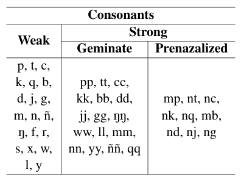
Tableau 1: Consonnes Wolof et Classifications
En outre, le système d'écriture wolof intègre un ensemble de 17 phonèmes voyelles (Cissé, 2004) complétant les 45 phonèmes consonnes déjà existants. Le tableau 2 donne un aperçu des voyelles wolof et de leurs classifications respectives.
À mesure que l'écrit gagne en importance à l'ère du numérique, la correction orthographique automatique joue un rôle essentiel pour garantir que les communications écrites soient à la fois efficaces et exactes. Malgré le manque de standardisation dans leur orthographe, il y a eu une vague d'intérêt pour développer des correcteurs orthographiques pour les langues autochtones africaines en raison de leur importance croissante dans l'éducation, le commerce et la diplomatie. Par conséquent, le développement des correcteurs orthographiques pour ces langues augmente lentement.
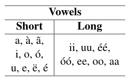
Tableau 2 : Voyelles et classifications du wolof
Notre contribution principale dans cet article est le développement de nouvelles ressources pour la langue wolof. Plus précisément, nous avons créé un correcteur orthographique pour l'autocorrection du texte wolof, ainsi qu'un corpus de mots mal orthographiés qui permettront aux chercheurs d'évaluer les performances des futurs systèmes d'autocorrection. De plus, nous avons développé un lexique wolof qui peut être utilisé pour une gamme de tâches au-delà de l'autocorrection, telles que la traduction automatique neuronale, la reconnaissance automatique de la parole, etc.
Les ressources qui ont été développées au cours de cette étude sont mises à disposition du public sur GitHub, permettant ainsi une diffusion plus large et facilitant la reproductibilité des résultats de la recherche.
Le reste de notre article est structuré comme suit : dans la section 2, nous réalisons une brève revue de la littérature et discutons de certaines études publiées. Dans la section 3, nous décrivons notre méthodologie proposée et les nouvelles ressources linguistiques que nous avons développées. Dans la section 4, nous présentons les résultats et les évaluations de notre étude. Dans la section 5, nous montrons les limites de notre système grâce à une analyse des erreurs. Enfin, la section 6 conclut le document et présente quelques perspectives prometteuses pour l'avenir.
2 Contexte
La correction orthographique consiste à suggérer des mots valides plus proches d'un mot incorrect. Afin de créer un système de correction orthographique automatique, il est impératif de comprendre les causes profondes des erreurs d'orthographe (Baba and Suzuki, 2012).
Plusieurs études sur les fautes d'orthographe ont été faites, avec une contribution notable de (Mitton, 1996) qui a analysé en profondeur différents types de fautes d'orthographe pour l'anglais et décrit des méthodes pour construire un système de correction orthographique automatique. (Kukich, 1992), d'autre part, a présenté une enquête sur les résultats documentés sur les modèles d'erreurs d'orthographe et catégorisé les erreurs d'orthographe en deux groupes:
- Erreurs lexicales : Résultat de fautes appliquées à des mots individuels, indépendamment de leur contexte au sein d'une phrase (Ten Hacken and Tschichold, 2001).
- Erreurs grammaticales : inclure à la fois les erreurs morphologiques et syntaxiques. Les erreurs morphologiques impliquent des déficiences dans des éléments linguistiques tels que la dérivation, la flexion, les prépositions, les articles, les pronoms personnels, les verbes auxiliaires et les déterminants. Les erreurs syntaxiques résultent de problèmes dans les composantes linguistiques, notamment la voix passive, le temps, les syntagmes nominaux, les verbes auxiliaires, l'accord sujet-verbe et les déterminants (Gayo and Widodo, 2018).
Les causes des fautes d'orthographe sont diverses et peuvent provenir de sources cognitives et typographiques (Peterson, 1980). Les erreurs cognitives surviennent lorsqu'une personne ne maîtrise pas l'orthographe correcte d'un mot, tandis que les erreurs typographiques se produisent lorsque des touches incorrectes sont frappées lors de la saisie. La littérature dans le domaine de la correction orthographique a généralement abordé ces types d'erreurs séparément, avec diverses techniques développées spécifiquement pour répondre à chaque type (Kukich, 1992). Malgré l'importance du traitement du langage, il y a eu un manque d'attention à la création d'outils de correction orthographique automatique pour les langues à faibles ressources en particulier. Bien que certaines tentatives aient été faites pour appliquer des techniques de correction orthographique automatique standard à quelques langues autochtones africaines (Boago Okgetheng et al., 2022; M'eric, 2014; Salifou et Naroua, 2014), aucun effort de ce type n'a été fait pour la langue wolof. À notre connaissance, la seule recherche exclusivement dédiée à la correction du wolof est (Lo et al., 2016), qui fournit un aperçu de l'état de l'art et esquisse des solutions potentielles pour développer un correcteur orthographique adapté au wolof. Cette recherche adopte des approches couramment utilisées dans le domaine et évalue les performances de notre système à l'aide de diverses métriques d'évaluation connues.
3 Méthodologie
Le système décrit dans cette étude vise à identifier et à corriger les erreurs non verbales en langue wolof.
Pour atteindre cet objectif, nous avons conçu et mis en œuvre le diagramme de flux présenté à la Figure 1.
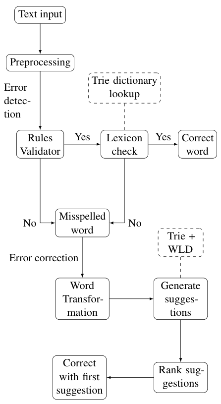
Figure 1 : Diagramme du correcteur orthographique
L'organigramme de la Figure 1 fournit une représentation visuelle des différents composants et processus impliqués dans le système de correcteur orthographique proposé. Le système comprend des mécanismes d'entrée et de sortie, des algorithmes pour la détection et la correction des erreurs, ainsi que des structures de données et des modèles qui aident à sa fonctionnalité. Le but du système est d'identifier et de corriger avec précision les erreurs non verbales dans la langue wolof. Par la présentation de l'architecture globale du système, le lecteur pourra comprendre le fonctionnement du système et ses principes de conception visant à détecter et corriger les mots invalides dans la langue wolof.
3.1 Génération de lexique wolof
Notre approche pour générer un lexique Wolof fiable implique la combinaison de méthodes d'annotation manuelle et d'extraction automatique.
Tout d'abord, une annotation manuelle a été réalisée sur un corpus de texte wolof (James Cross et al., 2022) pour identifier les mots uniques et les extraire dans une liste. Cette méthodologie permet un examen approfondi de la langue wolof et garantit la précision du lexique en permettant un contrôle manuel de l'inclusion des mots.
Deuxièmement, une extraction automatique a été réalisée à l'aide de méthodes de reconnaissance optique de caractères (OCR) et implémentée sous la forme de scripts Python, appliqués à plusieurs dictionnaires wolof-français (Fal et al., 1990 et Diouf et Kenkyjo, 2001). Cette méthodologie facilite l'expansion de la couverture du lexique et permet l'identification de mots supplémentaires qui pourraient ne pas avoir été capturés par l'annotation manuelle seule.
Enfin, pour assurer l'exactitude du lexique, les données globales résultantes ont fait l'objet d'une relecture. Cette étape a validé la justesse des mots et de leur orthographe et a permis d'apporter les révisions nécessaires avant la génération du lexique final.
Il est important de noter que, en raison de la disponibilité limitée des ressources en wolof, le lexique résultant ne contient que 1410 mots différents. Malgré cette contrainte, la combinaison de l'annotation manuelle et des méthodes d'extraction automatique a permis la génération d'un lexique wolof fiable.
3.2 Prétraitement
Notre système de correction orthographique met en œuvre une étape préliminaire, qui implique la suppression des entrées contenant des caractères numériques, des signes de ponctuation ou des mots empruntés à des langues étrangères. Le résultat de cette étape sert de base à la détection des erreurs non verbales dans le texte.
La phase de prétraitement consiste en trois opérations principales : l'élimination des signes de ponctuation, la normalisation de l'entrée et la segmentation du texte en mots individuels.
3.2.1 Retrait de la ponctuation
L'objectif de la suppression de la ponctuation dans notre étape de prétraitement est d'éliminer les signes de ponctuation non essentiels présents dans le texte d'entrée. Ces signes peuvent entraver l'efficacité du processus de correction orthographique et peuvent causer de la confusion lors de l'analyse du texte (Rahimi et Homayounpour, 2022). En supprimant ces signes, nous garantissons que les étapes ultérieures du système de correction orthographique peuvent traiter le texte de manière plus efficace et efficiente. L'algorithme utilisé dans cette étape scanne le texte d'entrée et supprime toutes les instances de points de ponctuation, y compris les virgules, les périodes, les points d'exclamation et les points d'interrogation. La sortie de cette étape est un texte nettoyé qui est libre des éléments étrangers et prêt pour l'analyse ciblée dans les étapes suivantes du système.
3.2.2 Normalisation
La phase de normalisation dans notre étape de prétraitement transforme le texte d'entrée en une forme standardisée en convertissant tous les caractères alphabétiques en minuscules et en supprimant tout mot en dehors de la langue wolof.
La conversion en minuscules est essentielle car de nombreuses techniques de TAL traitent les mots dans des casses différentes comme des entités distinctes, et la conversion du texte en minuscules élimine cet impact de la sensibilité à la casse sur l'analyse (HaCohen-Kerner et al., 2020).
En supprimant les mots des langues étrangères, nous visons à garantir que le texte analysé est uniquement dans la langue cible et à minimiser l'effet des mots qui peuvent ne pas avoir de signification sémantique dans le contexte de la langue wolof. Cela améliore la précision de l'analyse et réduit la probabilité d'introduire des erreurs dans les résultats.
3.2.3 Tokenisation des mots
La tokenisation est une étape critique dans le processus de correction orthographique automatique, car elle segmente le texte d'entrée en unités plus petites appelées tokens.
Il existe une gamme de techniques utilisées pour la tokenisation qui varient en fonction de la langue et de la tâche à accomplir. Celles-ci peuvent inclure le découpage sur les espaces et la ponctuation, l'utilisation d'expressions régulières, ou le recours à des dictionnaires et à des règles morphologiques (Dalrymple et al., 2006).
Le processus de tokenisation aboutit à des unités qui peuvent aller de caractères individuels ou de mots à des phrases ou même des phrases complètes. Cependant, la tokenisation de mots est la forme de segmentation la plus couramment utilisée dans les systèmes de correction orthographique, car elle sépare le texte en mots individuels et fournit une base solide pour l'identification des erreurs d'orthographe (Mosavi Miangah, 2013 ; Rahman et al., 2021 ; Abdulrahman et Hassani, 2022).
La tokenisation des mots améliore non seulement l'exactitude et l'efficacité du processus de correction orthographique, mais permet également une analyse du contexte dans lequel chaque mot apparaît. Cela permet au système de vérification orthographique de faire des suggestions plus éclairées pour les corrections orthographiques appropriées, améliorant ainsi la précision des résultats.
Dans l'investigation actuelle, nous mettons en œuvre le processus de tokenization en nous concentrant sur la segmentation au niveau des mots.
3.3 Détection des erreurs
L'étape de détection d'erreurs dans notre système de correction orthographique est conçue pour identifier les erreurs de mots inexistants dans le texte. Cela est réalisé grâce à un processus en deux étapes, consistant en une validation par rapport aux règles d'écriture du wolof et une comparaison avec un lexique construit.
3.3.1 Validateur de règles
L'orthographe des mots dans la langue wolof suit certaines conventions, telles que décrites par les formes CVC et CVCV(C) pour les mots monosyllabiques et dissyllabiques, respectivement (Merrill, 2021). Ces conventions spécifient que la consonne et la voyelle finales d'une syllabe ne peuvent pas être toutes deux longues, et les consonnes fortes ne peuvent pas apparaître après une voyelle longue ou au début d'un mot, sauf pour les consonnes prénasalisées.
Notre étape de détection des erreurs comprend une étape de validation qui vérifie rigoureusement chaque mot dans le texte d'entrée par rapport à ces conventions d'écriture. Si un mot est jugé conforme à ces règles, il passera à l'étape suivante de la validation. À l'inverse, si le mot est déterminé comme non conforme, il sera marqué comme invalide et nécessitera une correction.
3.3.2 Vérification du lexique
Dans la phase de vérification du lexique, le système de correction orthographique évalue chaque mot du texte d'entrée par rapport au lexique wolof pour déterminer sa validité. Le lexique, étant un grand référentiel de mots, peut poser des défis pour des recherches rapides et efficaces. Pour remédier à cela, diverses techniques telles que les tables de hachage (Kukich, 1992), la recherche binaire (Knuth, 1998), la structure de données tries (Bentley et Sedgewick, 1997) et le filtre bloom (Bloom, 1970) ont été développées pour permettre des recherches rapides dans les dictionnaires.
Dans le présent correcteur orthographique, le système utilise la structure de données trie, qui organise le lexique en nœuds qui représentent des caractères individuels et le nœud racine qui représente la chaîne vide. Dans cette structure, la recherche d'un mot dans le lexique implique de suivre le chemin à travers le trie qui correspond aux caractères du mot cible (Feng et al., 2012). Si la fin du chemin est un nœud terminal, le mot est considéré comme étant dans le lexique et jugé valide. Inversement, si le chemin se termine avant d'atteindre un nœud terminal, le mot est considéré comme incorrect et des corrections sont initiées.
3.4 Correction des erreurs
La dernière étape de la procédure de correction orthographique consiste à produire des remplacements potentiels pour le mot mal orthographié. Nos techniques de correction, décrites ci-dessous, se concentrent exclusivement sur le mot et ne tiennent pas compte du contexte dans lequel il apparaît. Le processus de correction comprend trois phases distinctes : la traduction des sons composés français, la génération de suggestions de candidats et le classement de ces suggestions.
3.4.1 Traduction des sons composés français
Avant de mettre en œuvre le module responsable de la traduction des sons composés français en wolof, nous avons collecté une petite quantité de données en wolof provenant de diverses sources. Ces données proviennent de sites d’information, de plateformes de médias sociaux et de sites religieux. Une analyse approfondie de ces données a été réalisée pour déterminer les fautes d'orthographe les plus courantes commises par les locuteurs wolof lorsqu'ils écrivent dans la langue. Nos résultats ont indiqué qu'un nombre important de ces erreurs étaient dues à l'utilisation de l'alphabet français au lieu de l'alphabet wolof. Cela a souvent entraîné la présence de sons composés français ou de lettres qui ne sont pas natives de la langue wolof. De plus, il a été observé que les accents, qui jouent un rôle crucial pour assurer une prononciation et une signification correctes des mots, étaient fréquemment négligés. Pour illustrer ces résultats, le tableau 3 présente certaines des fautes d'orthographe observées et leur équivalent correct en wolof.
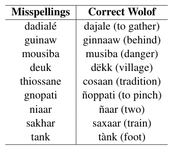
Tableau 3: Mots mal orthographiés et mots corrects en wolof
Prenant en compte les erreurs courantes observées dans l'analyse des données de langue wolof, notre système est conçu pour évaluer chaque mot pour la présence de sons composés français ou de lettres qui sont étrangères à l'alphabet wolof. Si de tels sons sont détectés, le module les traduira dans leurs équivalents wolof correspondants. Les lettres n'appartenant pas à l'alphabet wolof seront systématiquement éliminées. Une fois ces transformations terminées, le résultat sera dirigé vers la phase suivante du processus de correction et du module de suggestions de candidats.
3.4.2 Génération de suggestions candidates
Dans le système actuel, pour générer des alternatives potentielles pour les mots mal orthographiés, nous avons mis en œuvre une méthode de comparaison de distance lexicographique. Ce processus consiste à déterminer le nombre minimum d'opérations d'édition, telles que l'insertion, la suppression, la transposition et la substitution, nécessaires pour changer un mot en un autre (Vienney, 2004). Plus les disparités entre deux mots sont importantes, plus la distance lexicographique entre eux est grande. Parmi les différentes métriques de distance lexicographique, la Distance de Levenshtein (Levenshtein, 1965) est la plus couramment utilisée. Il quantifie la différence entre deux chaînes en fonction des trois opérations de chaîne fondamentales: substitution, insertion et suppression.
Soit Levα,β la distance de Levenshtein entre la sous-séquence formée avec les α premiers caractères d'un mot W1 et la sous-séquence formée avec les β premiers caractères d'un mot W. La distance de Levenshtein entre les deux sous-séquences W1 et W2 (de longueur |W1| et |W2| respectivement) peut être calculée récursivement en utilisant la formule 1 (Levenshtein, 1965).
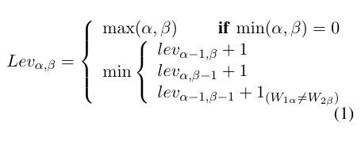
La distance de Levenshtein, calculée en utilisant son équation récursive, peut être coûteuse en termes de calcul (Gusfield, 1997), surtout pour les grandes distances, car elle a une complexité temporelle exponentielle de O(3min(|W1|,|W2|)). Pour résoudre ce problème, notre approche combine deux techniques: la programmation dynamique et la structure de données trie.
La programmation dynamique (Almudevar, 2001), en tant que technique pour résoudre des problèmes en les décomposant en sous-problèmes plus gérables et en stockant les solutions, permet de réduire le nombre de calculs redondants en offrant un stockage plus efficace des résultats intermédiaires. Lorsqu'elle est appliquée à la distance de Levenshtein, elle permet de stocker les résultats intermédiaires des calculs partiels dans une matrice, ce qui conduit à un calcul plus efficace du résultat final.
En combinant la programmation dynamique et la structure de données trie, notre approche élague efficacement l'espace de recherche et évite les calculs redondants. Cela offre une combinaison puissante pour calculer la distance de Levenshtein de manière rapide et efficace, même pour de grandes entrées.
Dans la distance standard de Levenshtein, toutes les opérations d'édition sont affectées d'un coût uniforme de 1. Cependant, en tenant compte des résultats discutés précédemment, une matrice de coûts a été introduite pour permettre l'assignation de coûts variables à différentes opérations d'édition. Cela permet une représentation plus nuancée de l'importance de chaque opération. Le coût des insertions et des suppressions reste à 1 pour tous les caractères. Les opérations de substitution entre les caractères source et cible sont assignées un coût de 1 si le couple de caractères est listé dans le Tableau 4, sinon, un coût de 2 est assigné.
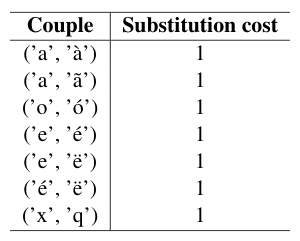
Tableau 4 : Coût de substitution de couples spécifiques
Notre module de suggestion génère des mots candidats potentiels pour un mot mal orthographié donné grâce au calcul de la distance d'édition entre le mot mal orthographié et chaque mot valide dans le lexique wolof. Pour chaque mot candidat, le coût de transformation du mot mal orthographié en mot candidat est fourni.
3.4.3 Classement des suggestions candidates
Dans la phase suivante de notre méthodologie, les mots candidats générés à partir de l'étape précédente sont soumis à évaluation. Le classement est effectué en fonction de la proximité des mots candidats par rapport au mot mal orthographié, le mot candidat ayant le coût d'édition le plus faible se voyant attribuer le rang le plus élevé. Le mot candidat avec le coût d'édition le plus faible est déterminé comme étant la correspondance la plus proche et est donc sélectionné comme la substitution la plus probable pour le mot incorrect.
4 Évaluations
Afin d'évaluer la performance de notre système de correction orthographique, nous avons d'abord construit un corpus de mots mal orthographiés, puis sélectionné les métriques d'évaluation appropriées, et enfin, nous avons mis en œuvre les métriques choisies pour évaluer la performance du système.
4.1 Génération d'un Corpus de mots mal orthographiés
La création d'un Corpus de Mots Mal Orthographiés a suivi une méthode similaire à la génération du lexique wolof. Nous avons utilisé une approche hybride d'annotation manuelle et automatique, suivie d'une relecture. La méthode impliquait la sélection de mots wolof couramment mal orthographiés découverts via les médias sociaux, les sites web religieux et les sites web d'actualités. Pour chaque faute d'orthographe, nous avons ajouté manuellement sa correction. Ce processus a abouti à la formation d'un corpus composé de 3070 mots, avec 1075 mots valides et 1995 mots invalides. La distance d'édition entre les mots mal orthographiés et leurs formes corrigées est présentée dans le Tableau 5.
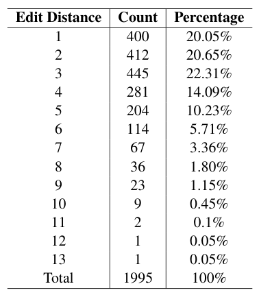
Tableau 5 : Distance d'édition des fautes d'orthographe par rapport à leurs corrections
4.2 Sélection des métriques d'évaluation
Il y a divers facteurs à prendre en compte dans l'évaluation des correcteurs orthographiques. Les mesures conventionnelles, y compris le rappel et la précision, ont été largement utilisées pendant un temps considérable pour évaluer la compétence linguistique de tels outils. néanmoins, d'un point de vue centré sur l'usage, ces paramètres d'évaluation présentent des limites en raison de l'absence de certaines variables intrinsèques à l'évaluation des correcteurs orthographiques dans ces métriques.
Pour déterminer la fiabilité de notre correcteur orthographique, nous avons utilisé les mesures proposées dans (Starlander et Popescu-Belis, 2002), (Voorhees et Garofolo, 2000), (Paggio et Music, 1998), (Paggio et Underwood, 1998), (King, 1999), ainsi que les mesures suivantes:
- Vrai positif (TP): mot correct qui est reconnu comme correct par le correcteur orthographique.
- Faux positif (FP): mot incorrect qui est reconnu comme correct par le correcteur orthographique.
- Faux négatif (FN): mot correct qui est reconnu comme incorrect par le correcteur orthographique.
- Vrai négatif (TN): mot incorrect qui est reconnu comme incorrect par le correcteur orthographique.
Malgré leur ancienneté, ces métriques restent largement utilisées dans l'état de l'art actuel pour évaluer les correcteurs orthographiques, en particulier ceux conçus pour les langues à ressources limitées telles que (Abdulrahman et Hassani, 2022) et (Boago Okgetheng et al., 2022).
Les autres métriques utilisées dans ces évaluations sont décrites comme suit :
4.2.1 Récall lexical ou Rc
Il est déterminé en calculant le rapport des mots valides correctement reconnus dans le texte par le correcteur orthographique, au nombre total de mots exacts dans le même texte, comme indiqué dans la formule 2 (Starlander et Popescu-Belis, 2002).
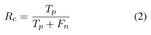
4.2.2 Erreur de rappel ou Ri
Il est exprimé comme la fraction de mots incorrects dans le texte détecté par le correcteur orthographique, comparé au nombre total de mots incorrects dans le texte, comme indiqué dans la formule 3 (Starlander et Popescu-Belis, 2002).
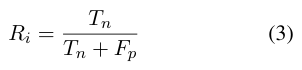
4.2.3 Précision lexicale ou Pc
Il est calculé en divisant le nombre total de mots valides reconnus avec précision par le correcteur orthographique par la somme des mots valides reconnus par le correcteur orthographique et la quantité de mots invalides qui n'ont pas été identifiés comme incorrects par le correcteur orthographique, comme le montre la formule 4 (Starlander et Popescu-Belis, 2002).
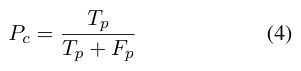
4.2.4 Erreur de précision ou Pi
Il est déterminé en divisant le nombre de marqueurs exacts établis par le correcteur orthographique par le nombre total de marqueurs émis par le système, comme le montre la formule 5 (Starlander et Popescu-Belis, 2002).
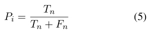
4.2.5 F-mesure lexicale ou F mc
Il permet de calculer la moyenne harmonique entre le rappel lexical et la précision lexicale, comme le montre la formule 6 (Starlander et Popescu-Belis, 2002).
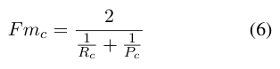
4.2.6 Erreur F-measure ou F mi
La mesure F de l'erreur est calculée en calculant la moyenne harmonique du rappel lexical et de la précision lexicale, comme le montre la formule 7 (Starlander et Popescu-Belis, 2002).
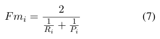
4.2.7 Exactitude prédictive ou P A
Elle quantifie la probabilité qu'un mot quelconque, qu'il soit correct ou incorrect, soit traité correctement par le correcteur orthographique. Il est calculé à l'aide de la formule 8 (Starlander et Popescu-Belis, 2002).
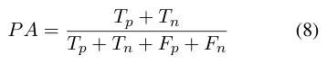
4.2.8 Pertinence de la suggestion ou SA
Elle mesure la capacité de notre correcteur orthographique à suggérer des alternatives d'orthographe précises pour un mot mal orthographié. Soit S une recommandation appropriée pour un mot incorrect et N représente le nombre total de mots mal orthographiés. L'adéquation des suggestions de notre système est calculée à l'aide de la formule 9 (Starlander et Popescu-Belis, 2002).
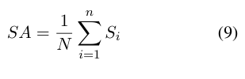
4.2.9 Classement réciproque moyen ou MRR
Comme indiqué précédemment, notre correcteur orthographique sélectionne systématiquement le premier mot de la liste de recommandations comme étant la substitution la plus probable pour le mot mal orthographié. Cependant, comme le choix de la première option dans la liste recommandée peut ne pas toujours être le choix approprié, nous utiliserons la métrique MRR pour évaluer la méthodologie de classement. Soit N le nombre total de mots incorrects et Ranki,c la position de la suggestion correcte dans la liste de suggestion pour le ie mot mal orthographié dans N. Le MRR est calculé en utilisant la Formule 10 (Voorhees et Garofolo, 2000).
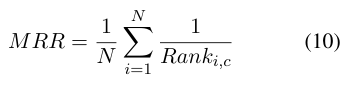
4.3 Expériences
4.3.1 Résultats
Les résultats de notre correcteur orthographique, comme le montre le tableau 6, montrent un niveau de compétence remarquable dans divers aspects de la correction orthographique.
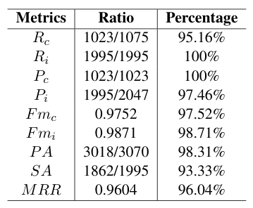
Tableau 6 : Mesures de performance du correcteur orthographique
Le score de rappel de 95,16% (Rc) et 100% (Ri) illustre la nature exhaustive du lexique utilisé par le correcteur orthographique, ainsi que son statut relativement intact.
Le correcteur orthographique affiche un niveau de précision exceptionnel, avec un score de 100% (Pc) et 97,46% (Pi), ce qui indique sa fiabilité dans l'identification précise des fautes d'orthographe ainsi que des mots valides. Les scores de la mesure F de 97,52 % (F mc) et 98,71 % (F mi) démontrent l'évitement par le correcteur orthographique des stratégies simplistes, assurant ainsi son efficacité.
Le score de précision des suggestions du correcteur orthographique (SA) de 93,33% atteste de la pertinence et de la véracité de l'alternative la plus probable au mot mal orthographié présenté à l'utilisateur final.
Le score de rang réciproque moyen (MRR) de 96,04% souligne la qualité du classement des suggestions présentées par le correcteur orthographique.
Enfin, la performance linguistique globale du correcteur orthographique, comme indiqué par son score de précision prédictive (P A) de 98,31%, est de nature très satisfaisante.
4.3.2 Analyse des erreurs
Pour comprendre pleinement et identifier les limites linguistiques de notre correcteur orthographique, nous avons mené une enquête sur les distances d'édition des mots mal orthographiés pour lesquels le système a produit une suggestion incorrecte. Le résultat de cette étude est présenté dans le Tableau 7.
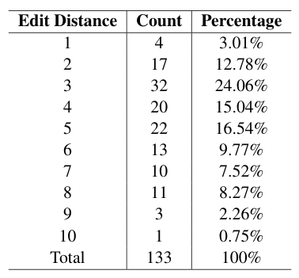
Tableau 7: Modifier la distance des fautes d'orthographe avec des suggestions incorrectes
Après un examen approfondi des résultats affichés, nous avons surpris de constater qu'il n'y avait pas de corrélation linéaire significative entre la distance d'édition d'un mot mal orthographié et la probabilité que le correcteur orthographique génère des suggestions incorrectes. Ces constatations concordent avec celles présentées au tableau 5. La majorité des mots dans notre corpus de mots mal orthographiés avaient une distance d'édition de 3, ce qui augmentait la probabilité que le correcteur orthographique produise une suggestion erronée pour les mots mal orthographiés avec une distance d'édition de 3. De plus, comme les mots mal orthographiés avec des distances d'édition de 11, 12 et 13 étaient sous-représentés dans notre corpus, les suggestions du correcteur orthographique pour ces mots étaient toutes exactes. Cela renforce notre conclusion que plus la fréquence des mots mal orthographiés avec une distance d'édition spécifique est élevée, plus les chances que le correcteur orthographique génère des suggestions inexactes de mots mal orthographiés avec cette même distance d'édition sont grandes.
5 Limites
Malgré les performances impressionnantes et le temps de traitement minimal de notre correcteur orthographique, il est important de reconnaître ses limites.
Premièrement, le correcteur orthographique est limité aux mots inclus dans le lexique wolof créé et ne peut pas reconnaître les mots en dehors de celui-ci. Deuxièmement, l'algorithme de distance pondérée de Levenshtein utilisé peut ne pas toujours refléter avec précision la probabilité de différents types d'erreurs, ce qui entraîne des inexactitudes potentielles dans les suggestions.
Troisièmement, les structures de données de programmation dynamique et de trie utilisées peuvent entraîner des suggestions faussement positives en raison d'un manque de considération pour la signification sémantique des mots. De plus, le coût computationnel de notre approche peut être substantiel, en particulier pour les lexiques plus volumineux ou les mots avec de nombreuses corrections possibles. Enfin, le manque de connaissance du contexte peut entraîner des erreurs manquées ou des suggestions incorrectes.
6 Conclusion
Cet article présente un correcteur orthographique novateur pour la langue wolof, qui a démontré son potentiel, grâce à sa combinaison efficace de la structure de données trie, de la programmation dynamique et des algorithmes de distance de Levenshtein pondérée. L'approche hybride de l'annotation manuelle et automatique a permis la construction d'un lexique complet et d'un corpus robuste de mots mal orthographiés, permettant une évaluation robuste du potentiel du correcteur orthographique malgré les données limitées disponibles pour la langue. Grâce à ces efforts, nous espérons faire progresser l'état de la recherche en TAL pour la langue wolof et contribuer à la préservation du patrimoine linguistique des nations africaines, garantissant que leurs expressions culturelles distinctes soient protégées pour les générations futures.
Les résultats de cette recherche fournissent des preuves convaincantes de la viabilité du correcteur orthographique pour la langue wolofe, ouvrant des voies pour une amélioration et une exploration ultérieures.
Pour les recherches futures, il serait intéressant d'étudier l'effet de l'augmentation du lexique et du corpus de mots mal orthographiés sur la performance du correcteur orthographique. De plus, une comparaison de la performance du correcteur orthographique avec d'autres méthodes de correction orthographique utilisées dans les langues à ressources limitées, telles que les langues africaines indigènes, pourrait fournir des informations précieuses sur les forces et les faiblesses de l'approche actuelle. L'intégration de techniques de pointe, tenant compte du contexte, telles que celles basées sur l'apprentissage automatique et les réseaux de neurones profonds, dans le correcteur orthographique pourrait également être explorée pour améliorer davantage ses capacités.
Remerciements
Nous remercions les évaluateurs anonymes pour leurs commentaires et leurs retours utiles.
Nous remercions également les participants de la communauté wolofe pour avoir donné leur temps, leur sagesse et leur expertise.
Notes
1 https://github.com/TiDev00/Wolof_SpellChecker
2 https://www.wolof-online.com/
3 https://twitter.com/SaabalN
4 http://biblewolof.com/
Références
Roshna Omer Abdulrahman and Hossein Hassani. 2022. A language model for spell checking of educational texts in kurdish (sorani). 1st Annual Meeting of the ELRA/ISCA Special Interest Group on UnderResourced Languages, SIGUL 2022 - Held in Conjunction with the International Conference on Language Resources and Evaluation, LREC 2022 - Proceedings, pages 189-198.
Anthony Almudevar. 2001. A dynamic programming algorithm for the optimal control of piecewise deterministic markov processes. SIAM Journal on Control and Optimization, 40(2):525-539.
Yukino Baba and Hisami Suzuki. 2012. How are spelling errors generated and corrected? A study of corrected and uncorrected spelling errors using keystroke logs. In Proceedings of the 50th Annual Meeting of the Association for Computational Linguistics (Volume 2: Short Papers), pages 373-377, Jeju Island, Korea. Association for Computational Linguistics.
Jon L. Bentley and Robert Sedgewick. 1997. Fast algorithms for sorting and searching strings. Proceedings of the Annual ACM-SIAM Symposium on Discrete Algorithms, pages 360-369.
Burton H. Bloom. 1970. Space/Time trade-offs in hash coding with allowable errors. Communications of the ACM, 13(7):422-426.
Boago Okgetheng, G. Malema, Ariq Ahmer, Boemo Lenyibi, and Ontiretse Ishmael. 2022. Bantu Spell Checker and Corrector using Modified Edit Distance Algorithm (MEDA). Data Science and Machine Learning.
Mamadou Cissé. 2004. Dictionnaire Francais-Wolof, 2.éd. révisée et augmentée edition. Dictionnaires des Langues O. Langues et MOndes, L'Asiatheque, Paris.
Mary Dalrymple, Maria Liakata, and Lisa Mackie. 2006. Tokenization and morphological analysis for Malagasy. In International Journal of Computational Linguistics & Chinese Language Processing, Volume 11, Number 4, December 2006, pages 315-332.
Ibrahima Diouf, Cheikh Tidiane Ndiaye, and Ndèye Binta Dieme. 2017. Dynamique et transmission linguistique au Sénégal au cours des 25 dernières années. Cahiers québécois de démographie, 46(2):197-217.
Jean Léopold Diouf and Tōkyō Gaikokugo Daigaku. Ajia Afurika Gengo Bunka Kenkyūjo. 2001. Dictionnaire wolof : wolof-français, français-wolof. 39. Institute for the Study of Languages and Cultures of Asia and Africa (ILCAA), Tokyo University of Foreign Studies, Tokyo.
David Eberhard, Gary Simons, and Chuck Fennig. 2019. Ethnologue: Languages of the World, 22nd edition edition. SIL International, Dallas, Texas.
A. Fal, R. Santos, and J.L. Doneux. 1990. Dictionnaire Wolof-Français: Suivi d'un Index Français-Wolof. Karthala, 22-24, boulevard Arago, 75013 Paris.
Jianhua Feng, Jiannan Wang, and Guoliang Li. 2012. Trie-join: A trie-based method for efficient string similarity joins. The VLDB Journal, 21(4):437-461.
Hendri Gayo and Pratomo Widodo. 2018. An Analysis of Morphological and Syntactical Errors on the English Writing of Junior High School Indonesian Students. International Journal of Learning, Teaching and Educational Research, 17(4):58-70.
Dan Gusfield. 1997. Algorithms on strings, trees, and sequences: Computer science and computational biology. SIGACT News, 28(4):41-60.
Yaakov HaCohen-Kerner, Daniel Miller, and Yair Yigal. 2020. The influence of preprocessing on text classification using a bag-of-words representation. PloS one, 15(5):e0232525.
James Cross, Maha Elbayad, and Kenneth Heafield. 2022. No language left behind: Scaling human-centered machine translation.
M King. 1999. Evaluation design: The EAGLES framework. In Proceedings of the Konvens '98: Evaluation of the Linguistic Performance of Machine Translation Systems, Bonn, Germany. Rita Nübel, Uta SeewaldHeeg, Gardezi Verlag, St. Augustin.
Donald Knuth. 1998. Art of computer programming, the: Volume 3: Sorting and searching, 2nd edition. edition. Addison-Wesley Professional.
Karen Kukich. 1992. Techniques for automatically correcting words in text. Acm Computing Surveys, 24(4):377-439.
Vladimir I. Levenshtein. 1965. Binary codes capable of correcting deletions, insertions, and reversals. Soviet physics. Doklady, 10:707-710.
Alla Lo, Cheikh Bamba Dione, Mathieu Mangeot, Mouhamadou Khoule, Sokhna Bao-Diop, MameThierno Cissé, et al. 2016. Correction orthographique pour la langue wolof: état de l'art et perspectives. In JEP-TALN-RECITAL 2016: Traitement Automatique Des Langues Africaines TALAF 2016.
Jean-Jacques M'eric. 2014. A spell-checker and thesaurus for Bambara (Bamanankan) (Un v'erificateur orthographique pour la langue bambara) [in French]. TALAf@TALN, pages 141-146.
John T. M. Merrill. 2021. The evolution of consonant mutation and noun class marking in Wolof. Diachronica, 38(1):64-110.
Roger Mitton. 1996. English Spelling and the Computer. Studies in Language and Linguistics. Longman, London; New York.
Tayebeh Mosavi Miangah. 2013. FarsiSpell: A spell-checking system for Persian using a large monolingual corpus. Literary and Linguistic Computing, 29(1):56-73.
Patrizia Paggio and Bradley Music. 1998. Evaluation in the SCARRIE project. International Conference on Language Resources and Evaluation, Granada, Spain, pages 277-282.
Patrizia Paggio and Nancy L. Underwood. 1998. Validating the TEMAA LE evaluation methodology: A case study on Danish spelling checkers. Natural Language Engineering, 4(3):211-228.
James L. Peterson. 1980. Computer programs for detecting and correcting spelling errors. Communications of The Acm, 23(12):676-687.
Zahra Rahimi and Mohammad Mehdi Homayounpour. 2022. The impact of preprocessing on word embedding quality: A comparative study. Language Resources and Evaluation.
Md. Mijanur Rahman, Hasan Mahmud, Razia Sultana Rupa, and Mahnuma Rahman Rinty. 2021. A robust bangla spell checker for search engine. In 2021 6th International Conference on Communication and Electronics Systems (ICCES), pages 1329-1334.
Lawaly Salifou and Harouna Naroua. 2014. Design and Implementation of a Spell Checker for Hausa Language ('Etude et conception d'un correcteur orthographique pour la langue haoussa) [in French]. TALAf@TALN, pages 147-158.
Marianne Starlander and Andrei Popescu-Belis. 2002. Corpus-based evaluation of a French spelling and grammar checker. Proceedings of the 3rd International Conference on Language Resources and Evaluation, LREC 2002, pages 268-274.
Pius Ten Hacken and Cornelia Tschichold. 2001. Word Manager and CALL: Structured access to the lexicon as a tool for enriching learners' vocabulary. ReCALL, 13(1):121-131.
S. Vienney. 2004. Correction Automatique : Bilan et Perspectives. Presses universitaires de FrancheComté.
Ellen Voorhees and John Garofolo. 2000. The TREC Spoken Document Retrieval Track. Bulletin of the American Society for Information Science and Technology, 26(5):18-19.
English et Français
Automatic Spell Checker and Correction for Under-represented Spoken Languages: Case Study on Wolof
Vérification orthographique et correction automatiques pour les langues parlées sous-représentées : étude de cas sur le wolof
Affiliations
Thierno Ibrahima Cissé
Fatiha Sadat
Université du Québec à Montréal
Université du Québec à Montréal
Affiliations
Thierno Ibrahima Cissé
Fatiha Sadat
Université du Québec à Montréal
Université du Québec à Montréal
Abstract
Résumé
This paper presents a spell checker and correction tool specifically designed for Wolof, an under-represented spoken language in Africa. The proposed spell checker leverages a combination of a trie data structure, dynamic programming, and the weighted Levenshtein distance to generate suggestions for misspelled words. We created novel linguistic resources for Wolof, such as a lexicon and a corpus of misspelled words, using a semi-automatic approach that combines manual and automatic annotation methods. Despite the limited data available for the Wolof language, the spell checker's performance showed a predictive accuracy of 98.31% and a suggestion accuracy of 93.33%.
Cet article présente un correcteur orthographique et un outil de correction spécialement conçus pour le wolof, un langage parlé sous-représenté en Afrique. Le correcteur orthographique proposé tire parti d'une combinaison d'une structure de données trie, de la programmation dynamique et de la distance de Levenshtein pondérée pour générer des suggestions pour les mots mal orthographiés. Nous avons créé de nouvelles ressources linguistiques pour le wolof, telles qu'un lexique et un corpus de mots mal orthographiés, en utilisant une approche semi-automatique qui combine des méthodes d'annotation manuelle et automatique. Malgré les données limitées disponibles pour la langue wolof, les performances du correcteur orthographique ont montré une précision prédictive de 98,31 % et une précision de suggestion de 93,33 %.
Our primary focus remains the revitalization and preservation of Wolof as an Indigenous and spoken language in Africa, providing our efforts to develop novel linguistic resources. This work represents a valuable contribution to the growth of computational tools and resources for the Wolof language and provides a strong foundation for future studies in the automatic spell checking and correction field.
Notre objectif principal reste la revitalisation et la préservation du wolof en tant que langue autochtone et langage parlé en Afrique, en soutenant nos efforts pour développer de nouvelles ressources linguistiques. Ce travail représente une contribution précieuse à la croissance des outils et ressources informatiques pour la langue wolof et fournit une base solide pour les futures études dans le domaine de la vérification et de la correction orthographique automatique.
1 Introduction
1 Introduction
Linguistic diversity in Natural Language Processing (NLP) is essential to enable communication between different users and thus the development of linguistic tools that will serve the inclusion of diverse communities. Several research studies for low-resource languages have emerged; however spoken Indigenous and Endangered languages in Africa have been neglected, even though the cultural and linguistic richness they contain is inestimable.
La diversité linguistique dans le traitement du langage naturel (TLN) est essentielle pour permettre la communication entre différents utilisateurs et donc le développement d’outils linguistiques qui serviront l’inclusion de communautés diverses. Plusieurs travaux de recherche sur les langues peu dotées ont vu le jour ; cependant, les langues autochtones parlées et les langues en voie de disparition en Afrique ont été négligées, même si la richesse culturelle et linguistique qu'elles contiennent est inestimable.
The Wolof language, a popular language in west Africa spoken by almost 10 million individuals worldwide, is an immensely popular lingua franca in countries on the African continent, such as Senegal, Gambia and Mauritania. It serves as the primary dialect of Senegal (Diouf et al., 2017), hailing from the Senegambian branch of Niger-Congo's expansive language family. Furthermore, the language has been officially acknowledged in West Africa (Eberhard et al., 2019). It is therefore not surprising that the intensive use of Wolof within the region has allowed it to be recognized as being of paramount importance.
Le wolof, une langue populaire en Afrique de l'Ouest parlée par près de 10 millions de personnes dans le monde, est une lingua franca immensément populaire dans les pays du continent africain, tels que le Sénégal, la Gambie et la Mauritanie. Il est le principal dialecte du Sénégal (Diouf et al., 2017), issu de la branche sénégambienne de la grande famille des langues nigero-congolaises. De plus, la langue a été officiellement reconnue en Afrique de l'Ouest (Eberhard et al., 2019). Il n'est donc pas surprenant que l'utilisation intensive du wolof dans la région ait permis de le reconnaître comme étant d'une importance capitale.
Like several Indigenous and spoken languages of Africa, Wolof presents many challenges and issues, among which is the lack of linguistic resources and tools. Moreover, it is distinguished by its distinct tonal system which uses nasal vowels. The Wolof script is comprised of a total of 45 consonant phonemes, which are further subdivided into categories (Cissé, 2004). Table 1 illustrates the various Wolof consonants and their respective classifications.
Comme plusieurs langues indigènes et parlées d'Afrique, le wolof présente de nombreux défis et enjeux, parmi lesquels le manque de ressources et d'outils linguistiques. De plus, il se distingue par son système tonal distinct qui utilise des voyelles nasales. Le script wolof est composé d'un total de 45 phonèmes consonnes, qui sont subdivisés en catégories (Cissé, 2004). Le tableau 1 illustre les différentes consonnes wolofs et leurs classifications respectives.
Table 1: Wolof Consonants and Classifications
Tableau 1: Consonnes Wolof et Classifications
Furthermore, the Wolof writing system integrates a set of 17 vowel phonemes (Cissé, 2004) complementing the already existing 45 consonant phonemes. Table 2 provides an overview of the Wolof vowels and their respective classifications.
En outre, le système d'écriture wolof intègre un ensemble de 17 phonèmes voyelles (Cissé, 2004) complétant les 45 phonèmes consonnes déjà existants. Le tableau 2 donne un aperçu des voyelles wolof et de leurs classifications respectives.
As writing becomes increasingly important due to our digital age, automatic spell checking plays a vital role in making sure written communications are both efficient and accurate. Despite the lack of standardization in their orthography, there has been a surge of interest to develop spell checkers for African Indigenous languages due to their growing importance in education, commerce, and diplomacy. Consequently, the development of spell checkers for these languages is slowly increasing.
À mesure que l'écrit gagne en importance à l'ère du numérique, la correction orthographique automatique joue un rôle essentiel pour garantir que les communications écrites soient à la fois efficaces et exactes. Malgré le manque de standardisation dans leur orthographe, il y a eu une vague d'intérêt pour développer des correcteurs orthographiques pour les langues autochtones africaines en raison de leur importance croissante dans l'éducation, le commerce et la diplomatie. Par conséquent, le développement des correcteurs orthographiques pour ces langues augmente lentement.
Table 2: Wolof Vowels and Classifications
Tableau 2 : Voyelles et classifications du wolof
Our main contribution in this paper, is the development of new resources for the Wolof language. Specifically, we have created a spell checker for the autocorrection of Wolof text, as well as a corpus of misspelled words that will enable researchers to evaluate the performance of future autocorrection systems. Additionally, we have developed a Wolof lexicon that can be leveraged for a range of tasks beyond autocorrection, such as neural machine translation, automatic speech recognition, etc.
Notre contribution principale dans cet article est le développement de nouvelles ressources pour la langue wolof. Plus précisément, nous avons créé un correcteur orthographique pour l'autocorrection du texte wolof, ainsi qu'un corpus de mots mal orthographiés qui permettront aux chercheurs d'évaluer les performances des futurs systèmes d'autocorrection. De plus, nous avons développé un lexique wolof qui peut être utilisé pour une gamme de tâches au-delà de l'autocorrection, telles que la traduction automatique neuronale, la reconnaissance automatique de la parole, etc.
The resources that have been developed over the course of this study are made publicly accessible on GitHub, thereby enabling wider dissemination and facilitating the reproducibility of the research findings.
Les ressources qui ont été développées au cours de cette étude sont mises à disposition du public sur GitHub, permettant ainsi une diffusion plus large et facilitant la reproductibilité des résultats de la recherche.
The remainder of our paper is structured as follows: in Section 2, we conduct a brief literature review and discuss some published studies. In Section 3, we describe our proposed methodology and the novel linguistic resources, we developped. In Section 4, we present results and evaluations of our study. In Section 5, we show the limitations of our system through an error analysis. Finally, section 6 concludes the paper and show some promising perspectives for the future.
Le reste de notre article est structuré comme suit : dans la section 2, nous réalisons une brève revue de la littérature et discutons de certaines études publiées. Dans la section 3, nous décrivons notre méthodologie proposée et les nouvelles ressources linguistiques que nous avons développées. Dans la section 4, nous présentons les résultats et les évaluations de notre étude. Dans la section 5, nous montrons les limites de notre système grâce à une analyse des erreurs. Enfin, la section 6 conclut le document et présente quelques perspectives prometteuses pour l'avenir.
2 Background
2 Contexte
Spelling correction consists in suggesting valid words closer to a wrong one. In order to create an automatic spelling correction system, it is imperative to comprehend the root causes of spelling errors (Baba and Suzuki, 2012).
La correction orthographique consiste à suggérer des mots valides plus proches d'un mot incorrect. Afin de créer un système de correction orthographique automatique, il est impératif de comprendre les causes profondes des erreurs d'orthographe (Baba and Suzuki, 2012).
Several studies about spelling errors have been done, with a notable contribution from (Mitton, 1996) who thoroughly analyzed different types of spelling mistakes for English and described methods to construct an automatic spelling correction system. (Kukich, 1992), on the other hand, presented a survey on documented findings on spelling error patterns and categorized spelling errors into two groups:
Plusieurs études sur les fautes d'orthographe ont été faites, avec une contribution notable de (Mitton, 1996) qui a analysé en profondeur différents types de fautes d'orthographe pour l'anglais et décrit des méthodes pour construire un système de correction orthographique automatique. (Kukich, 1992), d'autre part, a présenté une enquête sur les résultats documentés sur les modèles d'erreurs d'orthographe et catégorisé les erreurs d'orthographe en deux groupes:
Lexical errors: Result of mistakes applied to individual words, regardless of their context within a sentence (Ten Hacken and Tschichold, 2001).
Erreurs lexicales : Résultat de fautes appliquées à des mots individuels, indépendamment de leur contexte au sein d'une phrase (Ten Hacken and Tschichold, 2001).
Grammatical errors: Include both morphological and syntactical errors. Morphological errors involve deficiencies in linguistic elements such as derivation, inflection, prepositions, articles, personal pronouns, auxiliary verbs, and determiners. Syntactical errors result from issues in linguistic components, including passive voice, tense, noun phrases, auxiliary verbs, subject-verb agreement, and determiners (Gayo and Widodo, 2018).
Erreurs grammaticales : inclure à la fois les erreurs morphologiques et syntaxiques. Les erreurs morphologiques impliquent des déficiences dans des éléments linguistiques tels que la dérivation, la flexion, les prépositions, les articles, les pronoms personnels, les verbes auxiliaires et les déterminants. Les erreurs syntaxiques résultent de problèmes dans les composantes linguistiques, notamment la voix passive, le temps, les syntagmes nominaux, les verbes auxiliaires, l'accord sujet-verbe et les déterminants (Gayo and Widodo, 2018).
The causes of spelling errors are diverse and can stem from both cognitive and typographical sources (Peterson, 1980). Cognitive errors arise when an individual lacks the proper understanding of the correct spelling of a word while typographical errors take place when incorrect keystrokes are made when typing. Literature in the field of spelling correction has typically approached these error types separately, with various techniques developed specifically to address each type (Kukich, 1992). Despite the significance of language processing, there has been a shortfall of focus on the creation of automatic spelling correction tools for low resource languages especially. While some attempts have been made to apply standard automatic spelling correction techniques to a few African indigenous languages (Boago Okgetheng et al., 2022; M'eric, 2014; Salifou and Naroua, 2014), no such efforts have been made for the Wolof language. As far as we are aware, the only research solely dedicated to the correction of Wolof is (Lo et al., 2016), which provides an overview of the state of the art and outlines potential solutions for developing a tailored orthographic corrector for Wolof. This research adopts commonly used approaches in the field and assesses the performance of our system using various known evaluation metrics.
Les causes des fautes d'orthographe sont diverses et peuvent provenir de sources cognitives et typographiques (Peterson, 1980). Les erreurs cognitives surviennent lorsqu'une personne ne maîtrise pas l'orthographe correcte d'un mot, tandis que les erreurs typographiques se produisent lorsque des touches incorrectes sont frappées lors de la saisie. La littérature dans le domaine de la correction orthographique a généralement abordé ces types d'erreurs séparément, avec diverses techniques développées spécifiquement pour répondre à chaque type (Kukich, 1992). Malgré l'importance du traitement du langage, il y a eu un manque d'attention à la création d'outils de correction orthographique automatique pour les langues à faibles ressources en particulier. Bien que certaines tentatives aient été faites pour appliquer des techniques de correction orthographique automatique standard à quelques langues autochtones africaines (Boago Okgetheng et al., 2022; M'eric, 2014; Salifou et Naroua, 2014), aucun effort de ce type n'a été fait pour la langue wolof. À notre connaissance, la seule recherche exclusivement dédiée à la correction du wolof est (Lo et al., 2016), qui fournit un aperçu de l'état de l'art et esquisse des solutions potentielles pour développer un correcteur orthographique adapté au wolof. Cette recherche adopte des approches couramment utilisées dans le domaine et évalue les performances de notre système à l'aide de diverses métriques d'évaluation connues.
3 Methodology
3 Méthodologie
The system outlined in this study aims to identify and correct non-word errors in Wolof language.
Le système décrit dans cette étude vise à identifier et à corriger les erreurs non verbales en langue wolof.
To achieve this objective, we designed and implemented the flowchart in Figure 1.
Pour atteindre cet objectif, nous avons conçu et mis en œuvre le diagramme de flux présenté à la Figure 1.
Figure 1: Flowchart of the spell checker
Figure 1 : Diagramme du correcteur orthographique
The flowchart in Figure 1 provides a visual representation of the various components and processes involved in the proposed spell checker system. The system includes input and output mechanisms, algorithms for error detection and correction, as well as data structures and models that aid in its functionality. The aim of the system is to accurately identify and rectify non-word errors in the Wolof language. Through the presentation of the system's overall architecture, the reader will be able to comprehend the workings of the system and its design principles aimed at detecting and correcting invalid words in the Wolof language.
L'organigramme de la Figure 1 fournit une représentation visuelle des différents composants et processus impliqués dans le système de correcteur orthographique proposé. Le système comprend des mécanismes d'entrée et de sortie, des algorithmes pour la détection et la correction des erreurs, ainsi que des structures de données et des modèles qui aident à sa fonctionnalité. Le but du système est d'identifier et de corriger avec précision les erreurs non verbales dans la langue wolof. Par la présentation de l'architecture globale du système, le lecteur pourra comprendre le fonctionnement du système et ses principes de conception visant à détecter et corriger les mots invalides dans la langue wolof.
3.1 Wolof Lexicon Generation
3.1 Génération de lexique wolof
Our approach to generating a reliable Wolof lexicon involves the combination of manual annotation and automatic extraction methods.
Notre approche pour générer un lexique Wolof fiable implique la combinaison de méthodes d'annotation manuelle et d'extraction automatique.
First, manual annotation was performed on a corpus of Wolof text (James Cross et al., 2022) to identify unique words and extract them into a list. This methodology provides a thorough examination of the Wolof language and ensures the precision of the lexicon by enabling manual control over the inclusion of words.
Tout d'abord, une annotation manuelle a été réalisée sur un corpus de texte wolof (James Cross et al., 2022) pour identifier les mots uniques et les extraire dans une liste. Cette méthodologie permet un examen approfondi de la langue wolof et garantit la précision du lexique en permettant un contrôle manuel de l'inclusion des mots.
Second, an automatic extraction was performed using Optical Character Recognition (OCR) methods and implemented in the form of Python scripts, applied to several Wolof-French dictionaries (Fal et al., 1990 and Diouf and Kenkyūjo, 2001). This methodology facilitates the expansion of the lexicon's coverage and enables the identification of additional words that may not have been captured through the manual annotation alone.
Deuxièmement, une extraction automatique a été réalisée à l'aide de méthodes de reconnaissance optique de caractères (OCR) et implémentée sous la forme de scripts Python, appliqués à plusieurs dictionnaires wolof-français (Fal et al., 1990 et Diouf et Kenkyjo, 2001). Cette méthodologie facilite l'expansion de la couverture du lexique et permet l'identification de mots supplémentaires qui pourraient ne pas avoir été capturés par l'annotation manuelle seule.
Finally, to ensure the lexicon's accuracy, the overall resulting data underwent proofreading. This step validated the correctness of the words and their spellings and allowed for any necessary revisions before the final lexicon was generated.
Enfin, pour assurer l'exactitude du lexique, les données globales résultantes ont fait l'objet d'une relecture. Cette étape a validé la justesse des mots et de leur orthographe et a permis d'apporter les révisions nécessaires avant la génération du lexique final.
It is important to note that due to the limited availability of Wolof resources, the resulting lexicon only contains 1410 different words. Despite this constraint, the combination of manual annotation and automatic extraction methods allowed the generation of a reliable Wolof lexicon.
Il est important de noter que, en raison de la disponibilité limitée des ressources en wolof, le lexique résultant ne contient que 1410 mots différents. Malgré cette contrainte, la combinaison de l'annotation manuelle et des méthodes d'extraction automatique a permis la génération d'un lexique wolof fiable.
3.2 Preprocessing
3.2 Prétraitement
Our spell checking system implements a preliminary stage, which entails the removal of inputs that contain numerical characters, punctuation marks, or borrowed words from foreign languages. The outcome of this step serves as the basis for the detection of non-word errors in the text.
Notre système de correction orthographique met en œuvre une étape préliminaire, qui implique la suppression des entrées contenant des caractères numériques, des signes de ponctuation ou des mots empruntés à des langues étrangères. Le résultat de cette étape sert de base à la détection des erreurs non verbales dans le texte.
The preprocessing phase consists of three primary operations: the elimination of punctuation marks, normalization of the input, and segmentation of the text into individual words.
La phase de prétraitement consiste en trois opérations principales : l'élimination des signes de ponctuation, la normalisation de l'entrée et la segmentation du texte en mots individuels.
3.2.1 Punctuation Removal
3.2.1 Retrait de la ponctuation
The goal of the punctuation removal in our preprocessing step is to eliminate any non-essential punctuation marks present in the input text. These marks can hinder the efficiency of the spell checking process and may cause confusion during the analysis of the text (Rahimi and Homayounpour, 2022). By removing these marks, we ensure that the subsequent stages of the spell checking system can process the text more effectively and efficiently. The algorithm employed in this stage scans the input text and removes all instances of punctuation marks, including commas, periods, exclamation marks, and question marks. The output of this step is a cleaned text that is free of the extraneous elements and ready for focused analysis in subsequent stages of the system.
L'objectif de la suppression de la ponctuation dans notre étape de prétraitement est d'éliminer les signes de ponctuation non essentiels présents dans le texte d'entrée. Ces signes peuvent entraver l'efficacité du processus de correction orthographique et peuvent causer de la confusion lors de l'analyse du texte (Rahimi et Homayounpour, 2022). En supprimant ces signes, nous garantissons que les étapes ultérieures du système de correction orthographique peuvent traiter le texte de manière plus efficace et efficiente. L'algorithme utilisé dans cette étape scanne le texte d'entrée et supprime toutes les instances de points de ponctuation, y compris les virgules, les périodes, les points d'exclamation et les points d'interrogation. La sortie de cette étape est un texte nettoyé qui est libre des éléments étrangers et prêt pour l'analyse ciblée dans les étapes suivantes du système.
3.2.2 Normalization
3.2.2 Normalisation
The normalization phase in our preprocessing step transforms the input text into a standardized form by converting all alphabetic characters to lowercase and removing any words outside of the Wolof language.
La phase de normalisation dans notre étape de prétraitement transforme le texte d'entrée en une forme standardisée en convertissant tous les caractères alphabétiques en minuscules et en supprimant tout mot en dehors de la langue wolof.
The conversion to lowercase is essential as many NLP techniques treat words in different cases as separate entities, and converting the text to lowercase eliminates this case sensitivity impact on the analysis (HaCohen-Kerner et al., 2020).
La conversion en minuscules est essentielle car de nombreuses techniques de TAL traitent les mots dans des casses différentes comme des entités distinctes, et la conversion du texte en minuscules élimine cet impact de la sensibilité à la casse sur l'analyse (HaCohen-Kerner et al., 2020).
By removing words from foreign languages, we aim to ensure that the text being analyzed is only in the target language and minimize the effect of words that may not hold semantic significance in the context of the Wolof language. This enhances the accuracy of the analysis and reduces the likelihood of introducing errors into the results.
En supprimant les mots des langues étrangères, nous visons à garantir que le texte analysé est uniquement dans la langue cible et à minimiser l'effet des mots qui peuvent ne pas avoir de signification sémantique dans le contexte de la langue wolof. Cela améliore la précision de l'analyse et réduit la probabilité d'introduire des erreurs dans les résultats.
3.2.3 Word Tokenization
3.2.3 Tokenisation des mots
Tokenization is a critical step in the automatic spell checking process, as it segments the input text into smaller units referred to as tokens.
La tokenisation est une étape critique dans le processus de correction orthographique automatique, car elle segmente le texte d'entrée en unités plus petites appelées tokens.
There is a range of techniques used for tokenization that vary depending on the language and task at hand. These may include splitting on whites-pace and punctuation, using regular expressions, or utilizing dictionaries and morphological rules (Dalrymple et al., 2006).
Il existe une gamme de techniques utilisées pour la tokenisation qui varient en fonction de la langue et de la tâche à accomplir. Celles-ci peuvent inclure le découpage sur les espaces et la ponctuation, l'utilisation d'expressions régulières, ou le recours à des dictionnaires et à des règles morphologiques (Dalrymple et al., 2006).
The tokenization process results in units that can range from individual characters or words to phrases or even full sentences. However, word tokenization is the most commonly used form of segmentation in spell checking systems, as it separates the text into individual words and provides a solid foundation for the identification of spelling errors (Mosavi Miangah, 2013; Rahman et al., 2021; Abdulrahman and Hassani, 2022).
Le processus de tokenisation aboutit à des unités qui peuvent aller de caractères individuels ou de mots à des phrases ou même des phrases complètes. Cependant, la tokenisation de mots est la forme de segmentation la plus couramment utilisée dans les systèmes de correction orthographique, car elle sépare le texte en mots individuels et fournit une base solide pour l'identification des erreurs d'orthographe (Mosavi Miangah, 2013 ; Rahman et al., 2021 ; Abdulrahman et Hassani, 2022).
Word tokenization not only enhances the accuracy and efficiency of the spell checking process but also allows for an analysis of the context in which each word appears. This enables the spell checking system to make more informed suggestions for appropriate spelling corrections, ultimately improving the accuracy of the results.
La tokenisation des mots améliore non seulement l'exactitude et l'efficacité du processus de correction orthographique, mais permet également une analyse du contexte dans lequel chaque mot apparaît. Cela permet au système de vérification orthographique de faire des suggestions plus éclairées pour les corrections orthographiques appropriées, améliorant ainsi la précision des résultats.
In the current investigation, we are implementing the process of tokenization with a focus on word-level segmentation.
Dans l'investigation actuelle, nous mettons en œuvre le processus de tokenization en nous concentrant sur la segmentation au niveau des mots.
3.3 Error Detection
3.3 Détection des erreurs
The error detection stage in our spell checking system is designed to identify non-word errors in the text. This is achieved through a two-step process, consisting of validation against Wolof writing rules and comparison with a constructed lexicon.
L'étape de détection d'erreurs dans notre système de correction orthographique est conçue pour identifier les erreurs de mots inexistants dans le texte. Cela est réalisé grâce à un processus en deux étapes, consistant en une validation par rapport aux règles d'écriture du wolof et une comparaison avec un lexique construit.
3.3.1 Rules Validator
3.3.1 Validateur de règles
The spelling of words in the Wolof language follows certain conventions, as described by the CVC and CVCV(C) forms for monosyllabic and disyllabic words, respectively (Merrill, 2021). These conventions specify that the final consonant and vowel of a syllable cannot both be long, and strong consonants cannot appear after a long vowel or at the beginning of a word, except for prenasalized consonants.
L'orthographe des mots dans la langue wolof suit certaines conventions, telles que décrites par les formes CVC et CVCV(C) pour les mots monosyllabiques et dissyllabiques, respectivement (Merrill, 2021). Ces conventions spécifient que la consonne et la voyelle finales d'une syllabe ne peuvent pas être toutes deux longues, et les consonnes fortes ne peuvent pas apparaître après une voyelle longue ou au début d'un mot, sauf pour les consonnes prénasalisées.
Our error detection stage includes a validation step that rigorously checks each word in the input text against these writing conventions. If a word is found to be in compliance with these rules, it will move on to the next stage of validation. Conversely, if the word is determined to be non-compliant, it will be flagged as invalid and require correction.
Notre étape de détection des erreurs comprend une étape de validation qui vérifie rigoureusement chaque mot dans le texte d'entrée par rapport à ces conventions d'écriture. Si un mot est jugé conforme à ces règles, il passera à l'étape suivante de la validation. À l'inverse, si le mot est déterminé comme non conforme, il sera marqué comme invalide et nécessitera une correction.
3.3.2 Lexicon Check
3.3.2 Vérification du lexique
In the lexicon verification phase, the spell checking system assesses each word in the input text against the Wolof lexicon to determine its validity. The lexicon, being a large repository of words, can pose challenges for quick and efficient searches. To address this, various techniques such as hash tables (Kukich, 1992), binary search (Knuth, 1998), tries data structure (Bentley and Sedgewick, 1997), and bloom filter (Bloom, 1970) have been developed to enable fast dictionary lookups.
Dans la phase de vérification du lexique, le système de correction orthographique évalue chaque mot du texte d'entrée par rapport au lexique wolof pour déterminer sa validité. Le lexique, étant un grand référentiel de mots, peut poser des défis pour des recherches rapides et efficaces. Pour remédier à cela, diverses techniques telles que les tables de hachage (Kukich, 1992), la recherche binaire (Knuth, 1998), la structure de données tries (Bentley et Sedgewick, 1997) et le filtre bloom (Bloom, 1970) ont été développées pour permettre des recherches rapides dans les dictionnaires.
In the present spell checker, the system uses the trie data structure, which organizes the lexicon into nodes that represent individual characters and the root node that represents the empty string. In this structure, searching for a word in the lexicon involves following the path through the trie that corresponds to the characters of the target word (Feng et al., 2012). If the end of the path is a terminal node, the word is considered to be in the lexicon and deemed valid. Conversely, if the path ends before reaching a terminal node, the word is considered incorrect and corrections are initiated.
Dans le présent correcteur orthographique, le système utilise la structure de données trie, qui organise le lexique en nœuds qui représentent des caractères individuels et le nœud racine qui représente la chaîne vide. Dans cette structure, la recherche d'un mot dans le lexique implique de suivre le chemin à travers le trie qui correspond aux caractères du mot cible (Feng et al., 2012). Si la fin du chemin est un nœud terminal, le mot est considéré comme étant dans le lexique et jugé valide. Inversement, si le chemin se termine avant d'atteindre un nœud terminal, le mot est considéré comme incorrect et des corrections sont initiées.
3.4 Error Correction
3.4 Correction des erreurs
The last stage of the spell correction procedure is to produce potential replacements for the incorrectly spelled word. Our correction techniques, described below, focus exclusively on the word and do not consider the context in which it appears. The correction process is comprised of three distinct phases: Translation of French Compound Sounds, Generation of Candidate Suggestions, and Ranking of those Suggestions.
La dernière étape de la procédure de correction orthographique consiste à produire des remplacements potentiels pour le mot mal orthographié. Nos techniques de correction, décrites ci-dessous, se concentrent exclusivement sur le mot et ne tiennent pas compte du contexte dans lequel il apparaît. Le processus de correction comprend trois phases distinctes : la traduction des sons composés français, la génération de suggestions de candidats et le classement de ces suggestions.
3.4.1 Translation of French compound sounds
3.4.1 Traduction des sons composés français
Prior to implementing the module responsible for translating French compound sounds into Wolof, we collected a small amount of Wolof data from various sources. This data was sourced from news websites, social media platforms and religious websites. A thorough analysis of this data was carried out to determine the most common misspellings made by Wolof speakers when writing in the language. Our findings indicated that a significant number of these errors were due to the usage of the French alphabet instead of the Wolof alphabet. This often resulted in the presence of French compound sounds or letters that are not native to the Wolof language. Furthermore, it was observed that accents, which play a crucial role in ensuring proper pronunciation and meaning of words, were frequently neglected. To showcase these findings, Table 3 presents some of the misspellings observed and their correct Wolof equivalent.
Avant de mettre en œuvre le module responsable de la traduction des sons composés français en wolof, nous avons collecté une petite quantité de données en wolof provenant de diverses sources. Ces données proviennent de sites d’information, de plateformes de médias sociaux et de sites religieux. Une analyse approfondie de ces données a été réalisée pour déterminer les fautes d'orthographe les plus courantes commises par les locuteurs wolof lorsqu'ils écrivent dans la langue. Nos résultats ont indiqué qu'un nombre important de ces erreurs étaient dues à l'utilisation de l'alphabet français au lieu de l'alphabet wolof. Cela a souvent entraîné la présence de sons composés français ou de lettres qui ne sont pas natives de la langue wolof. De plus, il a été observé que les accents, qui jouent un rôle crucial pour assurer une prononciation et une signification correctes des mots, étaient fréquemment négligés. Pour illustrer ces résultats, le tableau 3 présente certaines des fautes d'orthographe observées et leur équivalent correct en wolof.
Table 3: Misspellings and correct wolof words
Tableau 3: Mots mal orthographiés et mots corrects en wolof
Taking into consideration the common errors observed in the analysis of Wolof language data, our system is designed to assess each word for the presence of French compound sounds or letters that are extraneous to the Wolof alphabet. Should such sounds be detected, the module will translate them into their corresponding Wolof counterparts. Letters not belonging to the Wolof alphabet will be systematically eliminated. Upon completing these transformations, the output will be directed to the next phase of the correction process and candidate suggestions module.
Prenant en compte les erreurs courantes observées dans l'analyse des données de langue wolof, notre système est conçu pour évaluer chaque mot pour la présence de sons composés français ou de lettres qui sont étrangères à l'alphabet wolof. Si de tels sons sont détectés, le module les traduira dans leurs équivalents wolof correspondants. Les lettres n'appartenant pas à l'alphabet wolof seront systématiquement éliminées. Une fois ces transformations terminées, le résultat sera dirigé vers la phase suivante du processus de correction et du module de suggestions de candidats.
3.4.2 Generation of Candidate Suggestions
3.4.2 Génération de suggestions candidates
In the current system, to generate potential alternatives for misspelled words, we have implemented a lexicographical distance comparison method. This process involves determining the minimum number of edit operations, such as insertion, deletion, transposition, and substitution, necessary to change one word into another (Vienney, 2004). The more significant the disparities between two words, the greater the lexicographical distance between them. Out of various lexicographical distance metrics, the Levenshtein Distance (Levenshtein, 1965) is the most commonly utilized. It quantifies the difference between two strings based on the three fundamental string operations: substitution, insertion, and deletion.
Dans le système actuel, pour générer des alternatives potentielles pour les mots mal orthographiés, nous avons mis en œuvre une méthode de comparaison de distance lexicographique. Ce processus consiste à déterminer le nombre minimum d'opérations d'édition, telles que l'insertion, la suppression, la transposition et la substitution, nécessaires pour changer un mot en un autre (Vienney, 2004). Plus les disparités entre deux mots sont importantes, plus la distance lexicographique entre eux est grande. Parmi les différentes métriques de distance lexicographique, la Distance de Levenshtein (Levenshtein, 1965) est la plus couramment utilisée. Il quantifie la différence entre deux chaînes en fonction des trois opérations de chaîne fondamentales: substitution, insertion et suppression.
Let Levα,β be the Levenshtein distance between the subsequence formed with the α first characters of a word W1 and the subsequence formed with the β first characters of a word W. The Levenshtein distance between the two subsequences W1 and W2 (of length |W1| and |W2| respectively) can be recursively calculated using Formula 1 (Levenshtein, 1965).
Soit Levα,β la distance de Levenshtein entre la sous-séquence formée avec les α premiers caractères d'un mot W1 et la sous-séquence formée avec les β premiers caractères d'un mot W. La distance de Levenshtein entre les deux sous-séquences W1 et W2 (de longueur |W1| et |W2| respectivement) peut être calculée récursivement en utilisant la formule 1 (Levenshtein, 1965).
The Levenshtein distance, computed using its recursive equation, can be computationally expensive (Gusfield, 1997), especially for large distances as it has an exponential time complexity of O(3min(|W1|,|W2|) ). To address this issue, our approach combines two techniques: dynamic programming and the trie data structure.
La distance de Levenshtein, calculée en utilisant son équation récursive, peut être coûteuse en termes de calcul (Gusfield, 1997), surtout pour les grandes distances, car elle a une complexité temporelle exponentielle de O(3min(|W1|,|W2|)). Pour résoudre ce problème, notre approche combine deux techniques: la programmation dynamique et la structure de données trie.
Dynamic programming (Almudevar, 2001), as a technique for solving problems by decomposing them into more manageable subproblems and storing the solutions, helps reduce the number of redundant calculations by providing a more efficient storage of intermediate results. When applied to the Levenshtein distance, it allows for the intermediate results of partial computations to be stored in a matrix, leading to a more efficient calculation of the final result.
La programmation dynamique (Almudevar, 2001), en tant que technique pour résoudre des problèmes en les décomposant en sous-problèmes plus gérables et en stockant les solutions, permet de réduire le nombre de calculs redondants en offrant un stockage plus efficace des résultats intermédiaires. Lorsqu'elle est appliquée à la distance de Levenshtein, elle permet de stocker les résultats intermédiaires des calculs partiels dans une matrice, ce qui conduit à un calcul plus efficace du résultat final.
By combining dynamic programming and the trie data structure, our approach effectively prunes the search space and avoids redundant calculations. This provides a powerful combination for computing the Levenshtein distance in a fast and efficient manner, even for large inputs.
En combinant la programmation dynamique et la structure de données trie, notre approche élague efficacement l'espace de recherche et évite les calculs redondants. Cela offre une combinaison puissante pour calculer la distance de Levenshtein de manière rapide et efficace, même pour de grandes entrées.
In the standard Levenshtein distance, all edit operations are assigned a uniform cost of 1. However, considering the findings discussed earlier, a cost matrix was introduced to allow for the assignment of varying costs to different edit operations. This allows for a more nuanced representation of the importance of each operation. The cost for insertions and deletions remains at 1 for all characters. Substitution operations between source and target characters are assigned a cost of 1 if the character couple is listed in Table 4, otherwise, a cost of 2 is assigned.
Dans la distance standard de Levenshtein, toutes les opérations d'édition sont affectées d'un coût uniforme de 1. Cependant, en tenant compte des résultats discutés précédemment, une matrice de coûts a été introduite pour permettre l'assignation de coûts variables à différentes opérations d'édition. Cela permet une représentation plus nuancée de l'importance de chaque opération. Le coût des insertions et des suppressions reste à 1 pour tous les caractères. Les opérations de substitution entre les caractères source et cible sont assignées un coût de 1 si le couple de caractères est listé dans le Tableau 4, sinon, un coût de 2 est assigné.
Table 4: Substitution cost of specific couples
Tableau 4 : Coût de substitution de couples spécifiques
Our suggestion module generates potential candidate words for a given misspelled word through the computation of the edit distance between the misspelled word and each valid word in the Wolof lexicon. For each candidate word, the cost of transforming the misspelled word into the candidate word is provided.
Notre module de suggestion génère des mots candidats potentiels pour un mot mal orthographié donné grâce au calcul de la distance d'édition entre le mot mal orthographié et chaque mot valide dans le lexique wolof. Pour chaque mot candidat, le coût de transformation du mot mal orthographié en mot candidat est fourni.
3.4.3 Ranking of candidate suggestions
3.4.3 Classement des suggestions candidates
In the following phase of our methodology, the candidate words generated from the previous stage are subjected to evaluation. The ranking is performed based on the proximity of the candidate words to the misspelled word, with the candidate word having the smallest edit cost being assigned the highest rank. The candidate word with the lowest edit cost is determined to be the closest match and is therefore selected as the most likely substitution for the incorrect word.
Dans la phase suivante de notre méthodologie, les mots candidats générés à partir de l'étape précédente sont soumis à évaluation. Le classement est effectué en fonction de la proximité des mots candidats par rapport au mot mal orthographié, le mot candidat ayant le coût d'édition le plus faible se voyant attribuer le rang le plus élevé. Le mot candidat avec le coût d'édition le plus faible est déterminé comme étant la correspondance la plus proche et est donc sélectionné comme la substitution la plus probable pour le mot incorrect.
4 Evaluations
4 Évaluations
In order to assess the performance of our spell checking system, we first constructed a corpus of misspelled words, then selected the appropriate evaluation metrics, and finally, we implemented the chosen metrics to assess the performance of the system.
Afin d'évaluer la performance de notre système de correction orthographique, nous avons d'abord construit un corpus de mots mal orthographiés, puis sélectionné les métriques d'évaluation appropriées, et enfin, nous avons mis en œuvre les métriques choisies pour évaluer la performance du système.
4.1 Generation of a Misspelled Word Corpus
4.1 Génération d'un Corpus de mots mal orthographiés
The creation of a Misspelled Word Corpus followed a similar method as the generation of the Wolof lexicon. We used a hybrid approach of manual and automatic annotation, followed by proofreading. The method involved the selection of commonly misspelled Wolof words discovered through social media, religious websites, and news websites. For each misspelling, we manually added its correction. This process resulted in the formation of a corpus consisting of 3070 words, with 1075 valid words and 1995 invalid words. The edit distance between the misspelled words and their corrected forms is presented in Table 5.
La création d'un Corpus de Mots Mal Orthographiés a suivi une méthode similaire à la génération du lexique wolof. Nous avons utilisé une approche hybride d'annotation manuelle et automatique, suivie d'une relecture. La méthode impliquait la sélection de mots wolof couramment mal orthographiés découverts via les médias sociaux, les sites web religieux et les sites web d'actualités. Pour chaque faute d'orthographe, nous avons ajouté manuellement sa correction. Ce processus a abouti à la formation d'un corpus composé de 3070 mots, avec 1075 mots valides et 1995 mots invalides. La distance d'édition entre les mots mal orthographiés et leurs formes corrigées est présentée dans le Tableau 5.
Table 5: Edit distance of misspellings against their corrections
Tableau 5 : Distance d'édition des fautes d'orthographe par rapport à leurs corrections
4.2 Selection of the Evaluation Metrics
4.2 Sélection des métriques d'évaluation
There are various factors to consider in evaluating spelling checkers. Conventional metrics, including recall and precision, have been widely used for a considerable time to gauge the linguistic proficiency of such tools. nevertheless, from a usagec ntered approach, these evaluation parameters have limitations due to the absence of certain variables intrinsic to the evaluation of spelling checkers in these metrics.
Il y a divers facteurs à prendre en compte dans l'évaluation des correcteurs orthographiques. Les mesures conventionnelles, y compris le rappel et la précision, ont été largement utilisées pendant un temps considérable pour évaluer la compétence linguistique de tels outils. néanmoins, d'un point de vue centré sur l'usage, ces paramètres d'évaluation présentent des limites en raison de l'absence de certaines variables intrinsèques à l'évaluation des correcteurs orthographiques dans ces métriques.
To determine the reliability of our spell checker, we employed the metrics proposed in (Starlander and Popescu-Belis, 2002), (Voorhees and Garofolo, 2000), (Paggio and Music, 1998), (Paggio and Underwood, 1998), (King, 1999) as well as the following measures:
Pour déterminer la fiabilité de notre correcteur orthographique, nous avons utilisé les mesures proposées dans (Starlander et Popescu-Belis, 2002), (Voorhees et Garofolo, 2000), (Paggio et Music, 1998), (Paggio et Underwood, 1998), (King, 1999), ainsi que les mesures suivantes:
True positive (TP): correct word which is recognized as correct by the spell checker.
Vrai positif (TP): mot correct qui est reconnu comme correct par le correcteur orthographique.
False positive (FP): incorrect word which is recognized as correct by the spell checker.
Faux positif (FP): mot incorrect qui est reconnu comme correct par le correcteur orthographique.
False negative (FN): correct word which is recognized as incorrect by the spell checker.
Faux négatif (FN): mot correct qui est reconnu comme incorrect par le correcteur orthographique.
True negative (TN): incorrect word which is recognized as incorrect by the spell checker.
Vrai négatif (TN): mot incorrect qui est reconnu comme incorrect par le correcteur orthographique.
Despite their age, these metrics remain widely used in the current state of the art for evaluating spell checkers, particularly those designed for low-resource languages such as (Abdulrahman and Hassani, 2022) and (Boago Okgetheng et al., 2022).
Malgré leur ancienneté, ces métriques restent largement utilisées dans l'état de l'art actuel pour évaluer les correcteurs orthographiques, en particulier ceux conçus pour les langues à ressources limitées telles que (Abdulrahman et Hassani, 2022) et (Boago Okgetheng et al., 2022).
The other used metrics in these evlautions, are described as follows:
Les autres métriques utilisées dans ces évaluations sont décrites comme suit :
4.2.1 Lexical Recall or Rc
4.2.1 Récall lexical ou Rc
It is determined by calculating the ratio of correctly recognized valid words in the text by the spell checker, to the total number of accurate words in the same text, as shown in Formula 2 (Starlander and Popescu-Belis, 2002).
Il est déterminé en calculant le rapport des mots valides correctement reconnus dans le texte par le correcteur orthographique, au nombre total de mots exacts dans le même texte, comme indiqué dans la formule 2 (Starlander et Popescu-Belis, 2002).
4.2.2 Error Recall or Ri
4.2.2 Erreur de rappel ou Ri
It is expressed as the fraction of incorrect words in the text detected by the spell checker, compared to the overall number of incorrect words in the text, as shown in Formula 3 (Starlander and Popescu-Belis, 2002).
Il est exprimé comme la fraction de mots incorrects dans le texte détecté par le correcteur orthographique, comparé au nombre total de mots incorrects dans le texte, comme indiqué dans la formule 3 (Starlander et Popescu-Belis, 2002).
4.2.3 Lexical Precision or Pc
4.2.3 Précision lexicale ou Pc
It is calculated by dividing the total number of valid words accurately recognized by the spelling checker by the sum of valid words recognized by the spell checker and the quantity of invalid words that were not identified by the spell checker as incorrect, as shown in Formula 4 (Starlander and Popescu-Belis, 2002).
Il est calculé en divisant le nombre total de mots valides reconnus avec précision par le correcteur orthographique par la somme des mots valides reconnus par le correcteur orthographique et la quantité de mots invalides qui n'ont pas été identifiés comme incorrects par le correcteur orthographique, comme le montre la formule 4 (Starlander et Popescu-Belis, 2002).
4.2.4 Error Precision or Pi
4.2.4 Erreur de précision ou Pi
It is determined by dividing the number of accurate flags made by the spell checker by the total number of flags issued by the system, as shown in Formula 5 (Starlander and Popescu-Belis, 2002).
Il est déterminé en divisant le nombre de marqueurs exacts établis par le correcteur orthographique par le nombre total de marqueurs émis par le système, comme le montre la formule 5 (Starlander et Popescu-Belis, 2002).
4.2.5 Lexical F-measure or F mc
4.2.5 F-mesure lexicale ou F mc
It enables the calculation of the harmonic mean between lexical recall and lexical precision, as shown in Formula 6 (Starlander and Popescu-Belis, 2002).
Il permet de calculer la moyenne harmonique entre le rappel lexical et la précision lexicale, comme le montre la formule 6 (Starlander et Popescu-Belis, 2002).
4.2.6 Error F-measure or F mi
4.2.6 Erreur F-measure ou F mi
The Error F-measure is calculated by computing the harmonic mean of lexical recall and lexical precision, as shown in Formula 7 (Starlander and Popescu-Belis, 2002).
La mesure F de l'erreur est calculée en calculant la moyenne harmonique du rappel lexical et de la précision lexicale, comme le montre la formule 7 (Starlander et Popescu-Belis, 2002).
4.2.7 Predictive Accuracy or P A
4.2.7 Exactitude prédictive ou P A
It quantifies the probability of any word, whether correct or incorrect, being processed correctly by the spelling checker. It is calculated using Formula 8 (Starlander and Popescu-Belis, 2002).
Elle quantifie la probabilité qu'un mot quelconque, qu'il soit correct ou incorrect, soit traité correctement par le correcteur orthographique. Il est calculé à l'aide de la formule 8 (Starlander et Popescu-Belis, 2002).
4.2.8 Suggestion Adequacy or SA
4.2.8 Pertinence de la suggestion ou SA
It measures the ability of our spell checker to suggest accurate spelling alternatives for a misspelled word. Let S denote a proper recommendation for an incorrect word and N represent the total number of misspelled words. The Suggestion Adequacy of our system is calculated using Formula 9 (Starlander and Popescu-Belis, 2002).
Elle mesure la capacité de notre correcteur orthographique à suggérer des alternatives d'orthographe précises pour un mot mal orthographié. Soit S une recommandation appropriée pour un mot incorrect et N représente le nombre total de mots mal orthographiés. L'adéquation des suggestions de notre système est calculée à l'aide de la formule 9 (Starlander et Popescu-Belis, 2002).
4.2.9 Mean Reciprocal Rank or MRR
4.2.9 Classement réciproque moyen ou MRR
As previously stated, our spell checker systematically selects the first word in the list of recommendations as the most likely substitution for the misspelled word. However, as selecting the initial option in the recommended list may not always be the appropriate choice, we will utilize the MRR metric to assess the ranking methodology. Let N be the total number of incorrect words and Ranki,c be the position of the correct suggestion in the list of suggestion for the ith misspelled word in N. The MRR is computed using the Formula 10 (Voorhees and Garofolo, 2000).
Comme indiqué précédemment, notre correcteur orthographique sélectionne systématiquement le premier mot de la liste de recommandations comme étant la substitution la plus probable pour le mot mal orthographié. Cependant, comme le choix de la première option dans la liste recommandée peut ne pas toujours être le choix approprié, nous utiliserons la métrique MRR pour évaluer la méthodologie de classement. Soit N le nombre total de mots incorrects et Ranki,c la position de la suggestion correcte dans la liste de suggestion pour le ie mot mal orthographié dans N. Le MRR est calculé en utilisant la Formule 10 (Voorhees et Garofolo, 2000).
4.3 Experiments
4.3 Expériences
4.3.1 Results
4.3.1 Résultats
The results of our spell checker, as demonstrated in Table 6, exhibit a remarkable level of proficiency in various aspects of spelling correction.
Les résultats de notre correcteur orthographique, comme le montre le tableau 6, montrent un niveau de compétence remarquable dans divers aspects de la correction orthographique.
Table 6: Performance measures of the spell checker
Tableau 6 : Mesures de performance du correcteur orthographique
The recall score of 95.16% (Rc) and 100% (Ri) depicts the comprehensive nature of the lexicon utilized by the spell checker, as well as its relatively unspoiled status.
Le score de rappel de 95,16% (Rc) et 100% (Ri) illustre la nature exhaustive du lexique utilisé par le correcteur orthographique, ainsi que son statut relativement intact.
The spell checker exhibits an exceptional level of precision, with a score of 100% (Pc) and 97.46% (Pi), indicating its reliability in accurately identifying spelling errors as well as valid words. The F-measure scores of 97.52% (F mc) and 98.71% (F mi) demonstrate the spell checker's avoidance of simplistic strategies, thereby ensuring its efficiency.
Le correcteur orthographique affiche un niveau de précision exceptionnel, avec un score de 100% (Pc) et 97,46% (Pi), ce qui indique sa fiabilité dans l'identification précise des fautes d'orthographe ainsi que des mots valides. Les scores de la mesure F de 97,52 % (F mc) et 98,71 % (F mi) démontrent l'évitement par le correcteur orthographique des stratégies simplistes, assurant ainsi son efficacité.
The spell checker's suggestion accuracy (SA) score of 93.33% attests to the suitability and veracity of the most probable alternative to the misspelled word presented to the end-user.
Le score de précision des suggestions du correcteur orthographique (SA) de 93,33% atteste de la pertinence et de la véracité de l'alternative la plus probable au mot mal orthographié présenté à l'utilisateur final.
The mean reciprocal rank (MRR) score of 96.04% highlights the quality of the ranking of suggestions presented by the spell checker.
Le score de rang réciproque moyen (MRR) de 96,04% souligne la qualité du classement des suggestions présentées par le correcteur orthographique.
Finally, the overall linguistic performance of the spell checker, as indicated by its predictive accuracy (P A) score of 98.31%, is of a highly satisfactory nature.
Enfin, la performance linguistique globale du correcteur orthographique, comme indiqué par son score de précision prédictive (P A) de 98,31%, est de nature très satisfaisante.
4.3.2 Errors analysis
4.3.2 Analyse des erreurs
To fully understand and identify the linguistic limitations of our spell checker, we conducted an investigation into the edit distances of the misspelled words for which the system produced an incorrect suggestion. The outcome of this study is presented in Table 7.
Pour comprendre pleinement et identifier les limites linguistiques de notre correcteur orthographique, nous avons mené une enquête sur les distances d'édition des mots mal orthographiés pour lesquels le système a produit une suggestion incorrecte. Le résultat de cette étude est présenté dans le Tableau 7.
Table 7: Edit distance of misspellings with wrong suggestions
Tableau 7: Modifier la distance des fautes d'orthographe avec des suggestions incorrectes
After a thorough examination of the results displayed, we surprisingly noted that there was no significant linear correlation between the edit distance of a misspelled word and the probability of the spell checker generating incorrect suggestions. These findings are in line with those displayed in Table 5. The majority of words in our misspelled word corpus had an edit distance of 3, which increased the likelihood of the spell checker producing a wrong suggestion for misspelled words with an edit distance of 3. Additionally, as misspelled words with edit distances of 11, 12, and 13 were under-represented in our corpus, the spell checker's suggestions for these words were all accurate. This reinforces our conclusion that the higher the frequency of misspelled words with a specific edit distance, the greater the chances of the spell checker generating inaccurate suggestions for misspelled words with that same edit distance.
Après un examen approfondi des résultats affichés, nous avons surpris de constater qu'il n'y avait pas de corrélation linéaire significative entre la distance d'édition d'un mot mal orthographié et la probabilité que le correcteur orthographique génère des suggestions incorrectes. Ces constatations concordent avec celles présentées au tableau 5. La majorité des mots dans notre corpus de mots mal orthographiés avaient une distance d'édition de 3, ce qui augmentait la probabilité que le correcteur orthographique produise une suggestion erronée pour les mots mal orthographiés avec une distance d'édition de 3. De plus, comme les mots mal orthographiés avec des distances d'édition de 11, 12 et 13 étaient sous-représentés dans notre corpus, les suggestions du correcteur orthographique pour ces mots étaient toutes exactes. Cela renforce notre conclusion que plus la fréquence des mots mal orthographiés avec une distance d'édition spécifique est élevée, plus les chances que le correcteur orthographique génère des suggestions inexactes de mots mal orthographiés avec cette même distance d'édition sont grandes.
5 Limitations
5 Limites
Despite the impressive performance and minimal processing time of our spell checker, it is important to acknowledge its limitations.
Malgré les performances impressionnantes et le temps de traitement minimal de notre correcteur orthographique, il est important de reconnaître ses limites.
Firstly, the spell checker is restricted to the words included in the created Wolof lexicon and cannot recognize words outside of it. Secondly, the weighted Levenshtein distance algorithm used may not always accurately reflect the likelihood of different types of errors, leading to potential inaccuracies in the suggestions.
Premièrement, le correcteur orthographique est limité aux mots inclus dans le lexique wolof créé et ne peut pas reconnaître les mots en dehors de celui-ci. Deuxièmement, l'algorithme de distance pondérée de Levenshtein utilisé peut ne pas toujours refléter avec précision la probabilité de différents types d'erreurs, ce qui entraîne des inexactitudes potentielles dans les suggestions.
Thirdly, the dynamic programming and trie data structures utilized may result in false positive suggestions due to a lack of consideration for the semantic meaning of words. Additionally, the computational cost of our approach can be substantial, particularly for larger lexicons or words with numerous possible corrections. Finally, the lack of context awareness may result in missed errors or incorrect suggestions.
Troisièmement, les structures de données de programmation dynamique et de trie utilisées peuvent entraîner des suggestions faussement positives en raison d'un manque de considération pour la signification sémantique des mots. De plus, le coût computationnel de notre approche peut être substantiel, en particulier pour les lexiques plus volumineux ou les mots avec de nombreuses corrections possibles. Enfin, le manque de connaissance du contexte peut entraîner des erreurs manquées ou des suggestions incorrectes.
6 Conclusion
6 Conclusion
This paper presented a novel spell checker for the Wolof language, that has demonstrated its potential, owing to its effective combination of the trie data structure, dynamic programming, and weighted Levenshtein distance algorithms. The hybrid approach of manual and automatic annotation enabled the construction of a comprehensive lexicon and a robust Misspelled Word Corpus, allowing for a robust evaluation of the spell checker's potential despite the limited data available for the language. Through these efforts, we hope to advance the state of NLP research for the Wolof language and contribute to preserving the linguistic heritage of African nations, ensuring that their distinct cultural expressions are protected for future generations.
Cet article présente un correcteur orthographique novateur pour la langue wolof, qui a démontré son potentiel, grâce à sa combinaison efficace de la structure de données trie, de la programmation dynamique et des algorithmes de distance de Levenshtein pondérée. L'approche hybride de l'annotation manuelle et automatique a permis la construction d'un lexique complet et d'un corpus robuste de mots mal orthographiés, permettant une évaluation robuste du potentiel du correcteur orthographique malgré les données limitées disponibles pour la langue. Grâce à ces efforts, nous espérons faire progresser l'état de la recherche en TAL pour la langue wolof et contribuer à la préservation du patrimoine linguistique des nations africaines, garantissant que leurs expressions culturelles distinctes soient protégées pour les générations futures.
The findings of this research provide compelling evidence of the viability of the spell checker for the Wolof language, opening avenues for further improvement and exploration.
Les résultats de cette recherche fournissent des preuves convaincantes de la viabilité du correcteur orthographique pour la langue wolofe, ouvrant des voies pour une amélioration et une exploration ultérieures.
For future research, it would be of interest to study the effect of increasing the lexicon and Misspelled Word Corpus on the spell checker's performance. Furthermore, a comparison of the spell checker's performance with other spell-checking methods used in low-resource languages, such as the Indigenous African languages, could provide valuable insights into the strengths and weaknesses of the current approach. The integration of stateo -the-art techniques,taking into consideration the context, such as those based on machine learning and Deep Neural Networks, into the spell checker could also be explored to further enhance its capabilities.
Pour les recherches futures, il serait intéressant d'étudier l'effet de l'augmentation du lexique et du corpus de mots mal orthographiés sur la performance du correcteur orthographique. De plus, une comparaison de la performance du correcteur orthographique avec d'autres méthodes de correction orthographique utilisées dans les langues à ressources limitées, telles que les langues africaines indigènes, pourrait fournir des informations précieuses sur les forces et les faiblesses de l'approche actuelle. L'intégration de techniques de pointe, tenant compte du contexte, telles que celles basées sur l'apprentissage automatique et les réseaux de neurones profonds, dans le correcteur orthographique pourrait également être explorée pour améliorer davantage ses capacités.
Acknowledgements
Remerciements
We thank the anonymous reviewers for their helpful comments and feedback.
Nous remercions les évaluateurs anonymes pour leurs commentaires et leurs retours utiles.
We also thank the participants of the Wolof community for giving their time, wisdom, and expertise.
Nous remercions également les participants de la communauté wolofe pour avoir donné leur temps, leur sagesse et leur expertise.
Notes
Notes
1 https://github.com/TiDev00/Wolof_SpellChecker
2 https://www.wolof-online.com/
3 https://twitter.com/SaabalN
4 http://biblewolof.com/
References
Références
Roshna Omer Abdulrahman and Hossein Hassani. 2022. A language model for spell checking of educational texts in kurdish (sorani). 1st Annual Meeting of the ELRA/ISCA Special Interest Group on UnderResourced Languages, SIGUL 2022 - Held in Conjunction with the International Conference on Language Resources and Evaluation, LREC 2022 - Proceedings, pages 189-198.
Anthony Almudevar. 2001. A dynamic programming algorithm for the optimal control of piecewise deterministic markov processes. SIAM Journal on Control and Optimization, 40(2):525-539.
Yukino Baba and Hisami Suzuki. 2012. How are spelling errors generated and corrected? A study of corrected and uncorrected spelling errors using keystroke logs. In Proceedings of the 50th Annual Meeting of the Association for Computational Linguistics (Volume 2: Short Papers), pages 373-377, Jeju Island, Korea. Association for Computational Linguistics.
Jon L. Bentley and Robert Sedgewick. 1997. Fast algorithms for sorting and searching strings. Proceedings of the Annual ACM-SIAM Symposium on Discrete Algorithms, pages 360-369.
Burton H. Bloom. 1970. Space/Time trade-offs in hash coding with allowable errors. Communications of the ACM, 13(7):422-426.
Boago Okgetheng, G. Malema, Ariq Ahmer, Boemo Lenyibi, and Ontiretse Ishmael. 2022. Bantu Spell Checker and Corrector using Modified Edit Distance Algorithm (MEDA). Data Science and Machine Learning.
Mamadou Cissé. 2004. Dictionnaire Francais-Wolof, 2.éd. révisée et augmentée edition. Dictionnaires des Langues O. Langues et MOndes, L'Asiatheque, Paris.
Mary Dalrymple, Maria Liakata, and Lisa Mackie. 2006. Tokenization and morphological analysis for Malagasy. In International Journal of Computational Linguistics & Chinese Language Processing, Volume 11, Number 4, December 2006, pages 315-332.
Ibrahima Diouf, Cheikh Tidiane Ndiaye, and Ndèye Binta Dieme. 2017. Dynamique et transmission linguistique au Sénégal au cours des 25 dernières années. Cahiers québécois de démographie, 46(2):197-217.
Jean Léopold Diouf and Tōkyō Gaikokugo Daigaku. Ajia Afurika Gengo Bunka Kenkyūjo. 2001. Dictionnaire wolof : wolof-français, français-wolof. 39. Institute for the Study of Languages and Cultures of Asia and Africa (ILCAA), Tokyo University of Foreign Studies, Tokyo.
David Eberhard, Gary Simons, and Chuck Fennig. 2019. Ethnologue: Languages of the World, 22nd edition edition. SIL International, Dallas, Texas.
A. Fal, R. Santos, and J.L. Doneux. 1990. Dictionnaire Wolof-Français: Suivi d'un Index Français-Wolof. Karthala, 22-24, boulevard Arago, 75013 Paris.
Jianhua Feng, Jiannan Wang, and Guoliang Li. 2012. Trie-join: A trie-based method for efficient string similarity joins. The VLDB Journal, 21(4):437-461.
Hendri Gayo and Pratomo Widodo. 2018. An Analysis of Morphological and Syntactical Errors on the English Writing of Junior High School Indonesian Students. International Journal of Learning, Teaching and Educational Research, 17(4):58-70.
Dan Gusfield. 1997. Algorithms on strings, trees, and sequences: Computer science and computational biology. SIGACT News, 28(4):41-60.
Yaakov HaCohen-Kerner, Daniel Miller, and Yair Yigal. 2020. The influence of preprocessing on text classification using a bag-of-words representation. PloS one, 15(5):e0232525.
James Cross, Maha Elbayad, and Kenneth Heafield. 2022. No language left behind: Scaling human-centered machine translation.
M King. 1999. Evaluation design: The EAGLES framework. In Proceedings of the Konvens '98: Evaluation of the Linguistic Performance of Machine Translation Systems, Bonn, Germany. Rita Nübel, Uta SeewaldHeeg, Gardezi Verlag, St. Augustin.
Donald Knuth. 1998. Art of computer programming, the: Volume 3: Sorting and searching, 2nd edition. edition. Addison-Wesley Professional.
Karen Kukich. 1992. Techniques for automatically correcting words in text. Acm Computing Surveys, 24(4):377-439.
Vladimir I. Levenshtein. 1965. Binary codes capable of correcting deletions, insertions, and reversals. Soviet physics. Doklady, 10:707-710.
Alla Lo, Cheikh Bamba Dione, Mathieu Mangeot, Mouhamadou Khoule, Sokhna Bao-Diop, MameThierno Cissé, et al. 2016. Correction orthographique pour la langue wolof: état de l'art et perspectives. In JEP-TALN-RECITAL 2016: Traitement Automatique Des Langues Africaines TALAF 2016.
Jean-Jacques M'eric. 2014. A spell-checker and thesaurus for Bambara (Bamanankan) (Un v'erificateur orthographique pour la langue bambara) [in French]. TALAf@TALN, pages 141-146.
John T. M. Merrill. 2021. The evolution of consonant mutation and noun class marking in Wolof. Diachronica, 38(1):64-110.
Roger Mitton. 1996. English Spelling and the Computer. Studies in Language and Linguistics. Longman, London; New York.
Tayebeh Mosavi Miangah. 2013. FarsiSpell: A spell-checking system for Persian using a large monolingual corpus. Literary and Linguistic Computing, 29(1):56-73.
Patrizia Paggio and Bradley Music. 1998. Evaluation in the SCARRIE project. International Conference on Language Resources and Evaluation, Granada, Spain, pages 277-282.
Patrizia Paggio and Nancy L. Underwood. 1998. Validating the TEMAA LE evaluation methodology: A case study on Danish spelling checkers. Natural Language Engineering, 4(3):211-228.
James L. Peterson. 1980. Computer programs for detecting and correcting spelling errors. Communications of The Acm, 23(12):676-687.
Zahra Rahimi and Mohammad Mehdi Homayounpour. 2022. The impact of preprocessing on word embedding quality: A comparative study. Language Resources and Evaluation.
Md. Mijanur Rahman, Hasan Mahmud, Razia Sultana Rupa, and Mahnuma Rahman Rinty. 2021. A robust bangla spell checker for search engine. In 2021 6th International Conference on Communication and Electronics Systems (ICCES), pages 1329-1334.
Lawaly Salifou and Harouna Naroua. 2014. Design and Implementation of a Spell Checker for Hausa Language ('Etude et conception d'un correcteur orthographique pour la langue haoussa) [in French]. TALAf@TALN, pages 147-158.
Marianne Starlander and Andrei Popescu-Belis. 2002. Corpus-based evaluation of a French spelling and grammar checker. Proceedings of the 3rd International Conference on Language Resources and Evaluation, LREC 2002, pages 268-274.
Pius Ten Hacken and Cornelia Tschichold. 2001. Word Manager and CALL: Structured access to the lexicon as a tool for enriching learners' vocabulary. ReCALL, 13(1):121-131.
S. Vienney. 2004. Correction Automatique : Bilan et Perspectives. Presses universitaires de FrancheComté.
Ellen Voorhees and John Garofolo. 2000. The TREC Spoken Document Retrieval Track. Bulletin of the American Society for Information Science and Technology, 26(5):18-19.
Comment citer
Citez l'article original pour son contenu et ses résultats. Citez la traduction lorsque vous reprenez la formulation traduite.
Citer l'article original
Cissé, T. I. et Sadat, F. (2023). Automatic Spell Checker and Correction for Under-represented Spoken Languages: Case Study on Wolof. Dans Proceedings of the Fourth workshop on Resources for African Indigenous Languages (RAIL 2023) (p. 1-10). https://doi.org/10.18653/v1/2023.rail-1.1
@inproceedings{cisse-sadat-2023-automatic,
title = "Automatic Spell Checker and Correction for Under-represented Spoken Languages: Case Study on {W}olof",
author = "Ciss{\'e}, Thierno Ibrahima and
Sadat, Fatiha",
editor = "Mabuya, Rooweither and
Mthobela, Don and
Setaka, Mmasibidi and
Van Zaanen, Menno",
booktitle = "Proceedings of the Fourth workshop on Resources for {A}frican Indigenous Languages ({RAIL} 2023)",
month = may,
year = "2023",
address = "Dubrovnik, Croatia",
publisher = "Association for Computational Linguistics",
url = "https://aclanthology.org/2023.rail-1.1/",
doi = "10.18653/v1/2023.rail-1.1",
pages = "1--10"
}TY - CONF AU - Cissé, Thierno Ibrahima AU - Sadat, Fatiha TI - Automatic Spell Checker and Correction for Under-represented Spoken Languages: Case Study on Wolof T2 - Proceedings of the Fourth workshop on Resources for African Indigenous Languages (RAIL 2023) PY - 2023 SP - 1 EP - 10 DO - 10.18653/v1/2023.rail-1.1 UR - https://aclanthology.org/2023.rail-1.1/ LA - en ER -
Citer cette traduction
Cissé, T. I. et Sadat, F. (2026). Vérification orthographique et correction automatiques pour les langues parlées sous-représentées : étude de cas sur le wolof (E. van Gassen, trad.). Traduction de "Automatic Spell Checker and Correction for Under-represented Spoken Languages: Case Study on Wolof" (Proceedings of the Fourth workshop on Resources for African Indigenous Languages (RAIL 2023), 2023). Talitha, Arktos AI Lab. https://talithapapers.com/fr/papers/2023.rail-1.1/
@misc{cisse-sadat-2023-automatic-fr,
author = {Thierno Ibrahima Cissé and Fatiha Sadat},
translator = {van Gassen, Ernst},
title = {{Vérification orthographique et correction automatiques pour les langues parlées sous-représentées : étude de cas sur le wolof}},
year = {2026},
publisher = {Arktos AI Lab},
language = {french},
url = {https://talithapapers.com/fr/papers/2023.rail-1.1/},
note = {Traduction de Automatic Spell Checker and Correction for Under-represented Spoken Languages: Case Study on Wolof (Proceedings of the Fourth workshop on Resources for African Indigenous Languages (RAIL 2023), 2023). Traduction automatique, non relue par un humain.}
}TY - GEN AU - Cissé, Thierno Ibrahima AU - Sadat, Fatiha TA - van Gassen, Ernst TI - Vérification orthographique et correction automatiques pour les langues parlées sous-représentées : étude de cas sur le wolof PY - 2026 PB - Arktos AI Lab UR - https://talithapapers.com/fr/papers/2023.rail-1.1/ LA - fr N1 - Traduction de Automatic Spell Checker and Correction for Under-represented Spoken Languages: Case Study on Wolof (Proceedings of the Fourth workshop on Resources for African Indigenous Languages (RAIL 2023), 2023). Traduction automatique, non relue par un humain. ER -